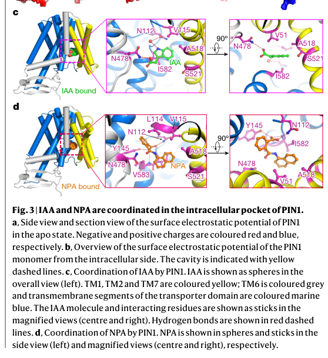

PIN1 (PIN-FORMED 1, AtPIN1) is a plasma-membrane-localized, polytopic (ten-transmembrane) secondary transporter of the auxin efflux carrier (PIN/AEC, TC 2.A.69.1) family that mediates cellular efflux of the phytohormone auxin (indole-3-acetic acid and related indolic auxins). The transmembrane domain adopts a NhaA fold composed of two inverted five-helix repeats, with an intracellular substrate-binding pocket that coordinates IAA, and PIN1 assembles as a homodimer. Auxin efflux activity is enhanced by AGC-kinase (e.g. D6PK) phosphorylation and competitively inhibited by the synthetic inhibitor N-1-naphthylphthalamic acid (NPA). The defining feature of PIN1 is its polar (apical or basal) localization within the plasma membrane, which is established and maintained by reversible phosphorylation of its central hydrophilic loop (by PINOID/PID and related AGC kinases, counteracted by PP2A/PP6-type phosphatases) and by GNOM-dependent endosomal recycling, together with MAB4/MEL adaptor proteins that limit lateral diffusion. Because the orientation of PIN1 in the membrane dictates the direction of intercellular (polar) auxin flow, PIN1 generates the local auxin gradients and maxima that pattern plant development. It controls vascular tissue formation, embryonic apical-basal axis and cotyledon formation, leaf shaping and venation, shoot apical meristem organ initiation and phyllotaxis, inflorescence and flower formation, gravitropism and photomorphogenic growth. Loss of PIN1 produces naked, pin-shaped inflorescences and broad defects in lateral organ number, size, shape and position.
| GO Term | Evidence | Action | Reason |
|---|---|---|---|
|
GO:0005886
plasma membrane
|
IEA
GO_REF:0000044 |
ACCEPT |
Summary: PIN1 is an integral plasma-membrane auxin efflux carrier; the plasma membrane is its functional location. This UniProt subcellular-location mapping is fully consistent with experimental evidence.
Reason: The plasma membrane is the bona fide functional compartment of PIN1, confirmed by multiple experimental studies; this is a core localization.
Supporting Evidence:
PMID:33705718
PINs, MAB4/MELs, and AGC kinases interact in the same complex at the plasma membrane.
|
|
GO:0016020
membrane
|
IEA
GO_REF:0000002 |
KEEP AS NON CORE |
Summary: Generic membrane localization from InterPro mapping. PIN1 is a multi-pass membrane protein, so the term is correct but far less informative than the plasma-membrane annotation.
Reason: Correct but a broad parent of the more specific (and experimentally supported) plasma membrane term; retained as non-core background.
Supporting Evidence:
PMID:35917925
The transmembrane domain of PIN1 has ten transmembrane segments (TM1 to TM10), with both N and C termini located extracellularly
|
|
GO:0055085
transmembrane transport
|
IEA
GO_REF:0000002 |
KEEP AS NON CORE |
Summary: PIN1 mediates transmembrane transport of auxin across the plasma membrane. The term is correct but is a broad parent of the more specific auxin export and polar auxin transport terms.
Reason: Accurate but generic; the more precise auxin-transport terms capture the core function. Retained as a correct broad parent.
Supporting Evidence:
PMID:35917925
These results show that PIN1 mediates active auxin efflux when expressed in HEK293F cells, and is further activated by D6PK.
|
|
GO:0060918
auxin transport
|
IEA
GO_REF:0000117 |
ACCEPT |
Summary: PIN1 is the founding auxin efflux carrier and a central mediator of auxin transport. This ARBA electronic annotation is well supported.
Reason: Core biological process; PIN1-mediated efflux is rate-limiting for cellular auxin transport.
Supporting Evidence:
PMID:9856939
Mutations affecting the PIN-FORMED (PIN1) gene diminish polar auxin transport in Arabidopsis thaliana inflorescence axes.
file:ARATH/PIN1/PIN1-deep-research-falcon.md
demonstrates PIN1-mediated auxin (IAA) efflux and inhibitor (NPA) binding, matching the UniProt record provided.
|
|
GO:0005515
protein binding
|
IPI
PMID:17237354 Interactions among PIN-FORMED and P-glycoprotein auxin trans... |
MARK AS OVER ANNOTATED |
Summary: IntAct interaction with ABCB19/PGP19 (Q9LJX0), a P-glycoprotein auxin transporter that co-acts with PIN1 in directional auxin transport. The bare protein binding term is uninformative about molecular function.
Reason: The interaction with ABCB19 is real and biologically relevant to auxin transport, but GO:0005515 is too generic to convey function; per curation guidance bare protein binding is not retained as a core molecular function.
Supporting Evidence:
PMID:17237354
Specific PGP–PIN interactions were seen in yeast two-hybrid and coimmunoprecipitation assays.
|
|
GO:0005515
protein binding
|
IPI
PMID:17889649 Antagonistic regulation of PIN phosphorylation by PP2A and P... |
UNDECIDED |
Summary: IntAct interaction with PINOID/PID (O64682), the AGC kinase that phosphorylates the PIN1 hydrophilic loop to control apical-basal polarity. The generic protein binding term is uninformative.
Reason: The cited publication (PMID:17889649) is available only as an abstract that describes PP2A/PINOID colocalization with and antagonistic phosphorylation of PINs; it does not report a direct physical PIN1-PID binding assay, so it does not substantiate this GO:0005515 (protein binding) IPI annotation. No verbatim supporting passage for a PIN1-PID interaction could be extracted.
|
|
GO:0005515
protein binding
|
IPI
PMID:20080776 PIN phosphorylation is sufficient to mediate PIN polarity an... |
UNDECIDED |
Summary: IntAct interaction with PID (O64682) in the context of phosphorylation directing PIN polarity. Generic protein binding term is uninformative.
Reason: The cited publication (PMID:20080776) characterizes a conserved phosphorylation site that controls PIN polarity and explicitly reports that its in vitro results do NOT support this site being a PID target; it does not report a direct physical PIN1-PID binding assay and therefore does not substantiate this GO:0005515 (protein binding) IPI annotation. No verbatim supporting passage for a PIN1-PID interaction could be extracted.
|
|
GO:0005886
plasma membrane
|
EXP
PMID:20439545 Differential auxin-transporting activities of PIN-FORMED pro... |
ACCEPT |
Summary: Experimental localization of PIN1 to the plasma membrane in root hair cells, consistent with its function as a PM auxin efflux carrier.
Reason: Direct experimental support for the core plasma-membrane localization.
Supporting Evidence:
PMID:20439545
those PINs were localized in the plasma membrane, where they likely export auxin to the apoplast
|
|
GO:0042802
identical protein binding
|
IDA
PMID:35917925 Structural insights into auxin recognition and efflux by Ara... |
ACCEPT |
Summary: Cryo-EM shows PIN1 forms a homodimer with a TM1/TM2/TM7 dimer interface. Identical protein binding (self-association) is directly demonstrated.
Reason: Directly supported by the structure; a genuine, informative molecular property (self-interaction), retained as a non-core but real activity.
Supporting Evidence:
PMID:35917925
we determined a dimeric structure of PIN1
|
|
GO:0042803
protein homodimerization activity
|
IDA
PMID:35917925 Structural insights into auxin recognition and efflux by Ara... |
ACCEPT |
Summary: PIN1 assembles as a homodimer in the cryo-EM structure, with TM1, TM2 and TM7 forming the dimer interface.
Reason: Structurally established homodimerization; an informative molecular function (more specific than identical protein binding).
Supporting Evidence:
PMID:35917925
TM1, TM2 and TM7 constitute the dimer interface, which consists mainly of hydrophobic residues
|
|
GO:0010315
auxin export across the plasma membrane
|
IDA
PMID:35917925 Structural insights into auxin recognition and efflux by Ara... |
ACCEPT |
Summary: PIN1 expressed in HEK293F cells mediates active IAA efflux across the plasma membrane (enhanced by D6PK, inhibited by NPA). This is the most precise biological-process term for the PIN1 efflux event.
Reason: Directly demonstrated auxin export across the PM; a core process.
Supporting Evidence:
PMID:35917925
These results show that PIN1 mediates active auxin efflux when expressed in HEK293F cells, and is further activated by D6PK. This PIN1-mediated auxin efflux is inhibited by NPA
file:ARATH/PIN1/PIN1-deep-research-falcon.md
that exports auxin from the cytosol toward the apoplast, thereby enabling
|
|
GO:0010329
auxin efflux transmembrane transporter activity
|
IDA
PMID:35917925 Structural insights into auxin recognition and efflux by Ara... |
ACCEPT |
Summary: Heterologous reconstitution plus cryo-EM with bound IAA establish PIN1 as a direct auxin efflux transmembrane transporter; IAA is coordinated in an intracellular pocket by conserved residues (V51, N112, N478, I582) and mutation of these residues impairs efflux activity. This is the core molecular function.
Reason: Strongest, most informative MF annotation; directly supported by structure-function evidence.
Supporting Evidence:
PMID:35917925
In the structure, IAA is coordinated through both hydrogen bonding and hydrophobic interactions
PMID:35917925
All interacting residues (V51, N112, N478 and I582) are highly conserved in PINs
file:ARATH/PIN1/PIN1-deep-research-falcon.md
Arabidopsis PIN1 was solved in multiple inward-facing conformations (apo, IAA-bound, NPA-bound), revealing a conserved transporter fold and a defined intracellular binding pocket that coordinates IAA.
file:ARATH/PIN1/PIN1-deep-research-falcon.md
this provides a molecular definition of PIN1’s substrate recognition.
|
|
GO:0005515
protein binding
|
IPI
PMID:33705718 AGC kinases and MAB4/MEL proteins maintain PIN polarity by l... |
MARK AS OVER ANNOTATED |
Summary: IntAct/UniProt interaction with NPY5/MEL1 (Q0WL52), a MAB4/MEL adaptor recruited to the plasma membrane by PIN1 to maintain polarity. Generic protein binding term is uninformative.
Reason: The PIN1-NPY5/MEL1 interaction is mechanistically important for polarity maintenance, but GO:0005515 conveys no specific function.
Supporting Evidence:
PMID:33705718
MAB4/MELs are recruited to the plasma membrane by the PINs and in concert with the AGC kinases maintain PIN polarity
|
|
GO:0071944
cell periphery
|
IDA
PMID:33705718 AGC kinases and MAB4/MEL proteins maintain PIN polarity by l... |
KEEP AS NON CORE |
Summary: PIN1 localizes to the cell periphery (plasma membrane and polar PM domains). Correct but a broad parent of the specific plasma-membrane term.
Reason: Accurate but generic relative to the plasma-membrane and polar-domain annotations; retained as non-core.
Supporting Evidence:
PMID:33705718
the polar subcellular plasma membrane (PM) localization of the PIN-FORMED (PIN) auxin efflux carriers
|
|
GO:0005886
plasma membrane
|
IDA
PMID:33705718 AGC kinases and MAB4/MEL proteins maintain PIN polarity by l... |
ACCEPT |
Summary: Direct experimental confirmation of PIN1 plasma-membrane localization within the PIN-MAB4/MEL-AGC kinase complex.
Reason: Core localization with direct experimental support.
Supporting Evidence:
PMID:33705718
we demonstrate that PINs, MAB4/MELs, and AGC kinases interact in the same complex at the plasma membrane
|
|
GO:0016324
apical plasma membrane
|
IDA
PMID:33705718 AGC kinases and MAB4/MEL proteins maintain PIN polarity by l... |
KEEP AS NON CORE |
Summary: PIN1 occupies polar (apical or basal) plasma-membrane domains; apical localization is observed in specific tissues and is phosphorylation-dependent. This polar PM subdomain is central to PIN1 directional function.
Reason: A real and functionally important polar PM subdomain; kept as non-core because the polarity (apical versus basal) is tissue- and phosphorylation-dependent rather than a fixed property, while plasma membrane is the core location.
Supporting Evidence:
PMID:20407025
The apical-basal polar localization of the PIN proteins that determines the direction of auxin flow is controlled by reversible phosphorylation of the PIN hydrophilic loop
|
|
GO:0045177
apical part of cell
|
IDA
PMID:33705718 AGC kinases and MAB4/MEL proteins maintain PIN polarity by l... |
KEEP AS NON CORE |
Summary: Reflects PIN1 apical polar localization. Correct but a broad cellular anatomical parent of apical plasma membrane.
Reason: Consistent with polar localization; generic relative to apical plasma membrane. Retained as non-core.
Supporting Evidence:
PMID:20407025
phosphomimic PIN1:green fluorescent protein (GFP) (Ser to Glu) showed apical localization in the shoot apex
|
|
GO:0005515
protein binding
|
IPI
PMID:36226797 SUE4, a novel PIN1-interacting membrane protein, regulates a... |
MARK AS OVER ANNOTATED |
Summary: TAIR interaction with SUE4 (AT3G55880), a PIN1-interacting membrane protein that regulates acropetal auxin transport under sulfur deficiency. Generic protein binding term is uninformative.
Reason: Biologically relevant interaction but GO:0005515 conveys no specific molecular function.
Supporting Evidence:
PMID:36226797
SUE4, a novel plasma membrane-localized protein, interacts with the polar auxin transporter PIN1
|
|
GO:0010168
ER body
|
IDA
PMID:36398993 Mapping of the Classical Mutation rosette Highlights a Role ... |
REMOVE |
Summary: This annotation assigns PIN1 to an ER body. PMID:36398993 is a study of the tomato classical mutation rosette mapping to the BIG/UBR4 ortholog and the role of calcium in wound-induced rooting; the ER association it reports is for BIG, not for PIN1. PIN1 is a long PIN that resides at the plasma membrane, whereas only the short PINs (PIN5/PIN8) are ER-localized. There is no sound evidence that PIN1 is an ER-body resident protein.
Reason: Appears to be a mis-assignment; the cited paper does not support PIN1 ER-body localization, and PIN1 is an established plasma-membrane protein.
Supporting Evidence:
PMID:35917925
The short PINs are typically found at the endoplasmic reticulum, whereas the long PINs are at the plasma membrane and dynamically regulated by endocytosis and recycling
PMID:36398993
Subcellular localization of BIG suggests that, like its mammalian ortholog, it is associated with the endoplasmic reticulum.
|
|
GO:0048830
adventitious root development
|
IMP
PMID:36398993 Mapping of the Classical Mutation rosette Highlights a Role ... |
KEEP AS NON CORE |
Summary: PIN1-dependent auxin transport is implicated in wound-induced (adventitious) rooting; in the cited study PIN1 accumulation was sensitive to calcium levels in ro/big mutants, linking PIN1-mediated transport to wound-induced root formation. This is a downstream developmental output of auxin transport.
Reason: A pleiotropic downstream developmental process mediated via PIN1 auxin transport; evidence is indirect (a tomato BIG study). Retained as non-core.
Supporting Evidence:
PMID:36398993
accumulation of the auxin transporter PIN-FORMED1 (PIN1) was sensitive to calcium levels in the ro/big mutants
|
|
GO:0060918
auxin transport
|
IMP
PMID:36398993 Mapping of the Classical Mutation rosette Highlights a Role ... |
ACCEPT |
Summary: Genetic and physiological evidence that PIN1 contributes to auxin transport (reduced transport rates and NPA hypersensitivity in the relevant mutants). Consistent with PIN1 core role in auxin transport.
Reason: Core biological process, corroborated by the founding and structural studies.
Supporting Evidence:
PMID:36398993
ro mutants were severely inhibited in formation of wound-induced roots (WiRs) and had reduced auxin transport rates.
|
|
GO:0010262
somatic embryogenesis
|
IMP
PMID:36345646 Endogenous auxin maintains embryonic cell identity and promo... |
KEEP AS NON CORE |
Summary: Endogenous auxin (transported by PINs including PIN1) maintains embryonic cell identity and promotes somatic embryo development. This is a downstream developmental process patterned by PIN1-generated auxin gradients.
Reason: Pleiotropic developmental output acting via auxin transport; non-core.
Supporting Evidence:
PMID:36345646
polar auxin transport, with AUXIN/LIKE-AUX influx and PIN-FORMED1 efflux carriers as important drivers, is required for the transition of embryonic cells to proembryos
|
|
GO:0005737
cytoplasm
|
HDA
PMID:15610358 High-throughput protein localization in Arabidopsis using Ag... |
UNDECIDED |
Summary: High-throughput GFP-fusion localization. PIN1 cycles between the plasma membrane and endosomal compartments via GNOM-dependent recycling, so a cytoplasmic/endosomal signal is expected for trafficking intermediates, but the plasma membrane is the functional site.
Reason: The cited publication (PMID:15610358) is a generic high-throughput GFP-fusion localization methods paper; its available abstract does not mention PIN1 or report a cytoplasmic localization for PIN1 specifically, so it does not substantiate this GO:0005737 (cytoplasm) annotation. No verbatim PIN1-specific supporting passage could be extracted.
|
|
GO:0009506
plasmodesma
|
HDA
PMID:21533090 Arabidopsis plasmodesmal proteome. |
UNDECIDED |
Summary: PIN1 was detected in a plasmodesmal proteome. Plasmodesmal plasma membrane is continuous with the cell-surface PM, so detection here is plausible for a PM protein but does not indicate a distinct functional plasmodesmal role.
Reason: The cited publication (PMID:21533090) is the Arabidopsis plasmodesmal proteome paper, but its cached text does not mention PIN1 anywhere, so it does not substantiate plasmodesmal detection of PIN1 for this GO:0009506 (plasmodesma) annotation. No verbatim PIN1-specific supporting passage could be extracted.
|
|
GO:0005515
protein binding
|
IPI
PMID:22715043 A PP6-type phosphatase holoenzyme directly regulates PIN pho... |
MARK AS OVER ANNOTATED |
Summary: UniProt interactions with FYPP1 (Q9LHE7) and FYPP3 (Q9SX52), subunits of a PP6-type phosphatase holoenzyme that dephosphorylates PIN1 and regulates auxin efflux. Generic protein binding term is uninformative.
Reason: A real regulatory phosphatase interaction, but GO:0005515 conveys no specific molecular function.
Supporting Evidence:
PMID:22715043
FyPP1 and FyPP3 interact with a subset of PIN proteins and regulate PIN protein phosphorylation and targeting in vivo
|
|
GO:0010329
auxin efflux transmembrane transporter activity
|
IMP
PMID:9856939 Regulation of polar auxin transport by AtPIN1 in Arabidopsis... |
ACCEPT |
Summary: The founding study identified AtPIN1 as a transmembrane component of the auxin efflux carrier; pin1 mutants have diminished polar auxin transport. This mutant-phenotype evidence supports the core efflux transporter function.
Reason: Core molecular function, independently established here and later directly demonstrated structurally (PMID:35917925).
Supporting Evidence:
PMID:9856939
AtPIN1 may act as a transmembrane component of the auxin efflux carrier.
|
|
GO:0005515
protein binding
|
IPI
PMID:17586653 Ubiquitin lysine 63 chain forming ligases regulate apical do... |
MARK AS OVER ANNOTATED |
Summary: UniProt interaction (Q9LY87) in the context of K63 ubiquitin chain ligases regulating apical dominance. Generic protein binding term is uninformative about molecular function.
Reason: Interaction is recorded but GO:0005515 conveys no specific function.
Supporting Evidence:
PMID:17586653
RGLG2 and PIN1 can interact in the yeast two-hybrid system
|
|
GO:0009793
embryo development ending in seed dormancy
|
IMP
PMID:20407025 Phosphorylation of conserved PIN motifs directs Arabidopsis ... |
KEEP AS NON CORE |
Summary: Loss-of-phosphorylation PIN1 internalizes during embryogenesis causing strong embryo defects, demonstrating a PIN1 requirement in embryo development through proper polar auxin transport.
Reason: Important downstream developmental role mediated by PIN1 polar auxin transport; pleiotropic, non-core.
Supporting Evidence:
PMID:20407025
induced internalization of PIN1:GFP during embryogenesis, leading to strong embryo defects
|
|
GO:0005886
plasma membrane
|
IDA
PMID:18337510 Auxin transport inhibitors impair vesicle motility and actin... |
UNDECIDED |
Summary: This annotation cites PMID:18337510 for PIN1 plasma-membrane localization, but that paper studies how auxin transport inhibitors affect actin-dependent vesicle trafficking; its available text does not present PIN1-specific plasma-membrane localization data.
Reason: The cited publication (PMID:18337510) does not substantiate PIN1 plasma-membrane localization; its available abstract/discussion concern actin-stabilizing effects of auxin transport inhibitors on vesicle motility and do not localize PIN1 to the plasma membrane. No verbatim PIN1-specific supporting passage could be extracted. (PIN1 plasma-membrane localization remains well supported by other annotations here, e.g. PMID:33705718 and PMID:35917925.)
|
|
GO:0005886
plasma membrane
|
IDA
PMID:19825598 Plasma membrane-associated SCAR complex subunits promote cor... |
UNDECIDED |
Summary: This annotation cites PMID:19825598 for PIN1 plasma-membrane localization, but that paper concerns plasma-membrane localization of the SCAR complex subunits BRK1 and SCAR1 and cortical F-actin; its available text does not mention PIN1.
Reason: The cited publication (PMID:19825598) does not mention PIN1; it reports plasma-membrane localization of SCAR complex subunits (BRK1, SCAR1), not PIN1, so it does not substantiate this GO:0005886 (plasma membrane) annotation. No verbatim PIN1-specific supporting passage could be extracted. (PIN1 plasma-membrane localization remains well supported by other annotations here, e.g. PMID:33705718 and PMID:35917925.)
|
|
GO:0005886
plasma membrane
|
IDA
PMID:18539115 Differential expression of WOX genes mediates apical-basal a... |
UNDECIDED |
Summary: This annotation cites PMID:18539115 for PIN1 plasma-membrane localization, but that paper is a study of WOX gene expression in apical-basal axis formation; its abstract mentions PIN1 only as a reporter gene for auxin response and provides no PIN1 plasma-membrane localization data.
Reason: The cited publication (PMID:18539115) does not substantiate PIN1 plasma-membrane localization; its available text concerns WOX2/WOX8 cell-fate regulators and references a PIN1 reporter only in the context of auxin response maxima. No verbatim passage localizing PIN1 to the plasma membrane could be extracted. (PIN1 plasma-membrane localization is well supported by other annotations in this review, e.g. PMID:33705718 and PMID:35917925.)
|
|
GO:0009505
plant-type cell wall
|
IDA
PMID:18539115 Differential expression of WOX genes mediates apical-basal a... |
MARK AS OVER ANNOTATED |
Summary: PIN1 is an integral ten-pass plasma-membrane protein; assignment to the plant-type cell wall is not biologically meaningful for an auxin efflux carrier and likely reflects PM or apoplast-adjacent signal.
Reason: Inconsistent with PIN1 being an integral membrane transporter; the cell wall is not a functional compartment for PIN1.
Supporting Evidence:
PMID:35917925
The transmembrane domain of PIN1 has ten transmembrane segments (TM1 to TM10), with both N and C termini located extracellularly
|
|
GO:0048825
cotyledon development
|
IGI
PMID:15371311 PIN-FORMED1 and PINOID regulate boundary formation and cotyl... |
KEEP AS NON CORE |
Summary: PIN1 acts with PINOID to regulate boundary formation and cotyledon development during embryogenesis, via patterning of auxin distribution.
Reason: Downstream developmental output of PIN1 auxin transport; pleiotropic, non-core.
Supporting Evidence:
PMID:15371311
Single mutations in the PIN-FORMED1 (PIN1) and PINOID (PID) genes, which mediate auxin-dependent organ formation, moderately disrupt the symmetric patterning of cotyledons
|
|
GO:0009908
flower development
|
IMP
PMID:20407025 Phosphorylation of conserved PIN motifs directs Arabidopsis ... |
KEEP AS NON CORE |
Summary: PIN1-dependent polar auxin transport is required for flower formation at the shoot apex; defective PIN1 phosphorylation causes inflorescence and flower defects. pin1 mutants form pin-shaped naked inflorescences lacking flowers.
Reason: Downstream developmental process patterned by PIN1 auxin transport; pleiotropic, non-core.
Supporting Evidence:
PMID:20407025
Loss-of-phosphorylation PIN1:green fluorescent protein (GFP) (Ser to Ala) induced inflorescence defects
|
|
GO:0010229
inflorescence development
|
IMP
PMID:20407025 Phosphorylation of conserved PIN motifs directs Arabidopsis ... |
KEEP AS NON CORE |
Summary: PIN1 is required for normal inflorescence development; the defining pin1 phenotype is a naked, pin-shaped inflorescence resulting from failed organ initiation at the shoot apex.
Reason: Downstream developmental output of PIN1 polar auxin transport; non-core.
Supporting Evidence:
PMID:20407025
Loss-of-phosphorylation PIN1:green fluorescent protein (GFP) (Ser to Ala) induced inflorescence defects
file:ARATH/PIN1/PIN1-deep-research-falcon.md
pin1 mutants exhibit severe organ initiation failures, producing “pin-like” stems with reduced or absent flowers/organs, supporting a causal link between PIN1-mediated PAT and organogenesis.
|
|
GO:0048826
cotyledon morphogenesis
|
IMP
PMID:20407025 Phosphorylation of conserved PIN motifs directs Arabidopsis ... |
KEEP AS NON CORE |
Summary: PIN1-mediated auxin transport during embryogenesis shapes cotyledon formation; phosphorylation-deficient PIN1 produces embryo and cotyledon defects.
Reason: Downstream developmental output of PIN1 auxin transport; non-core.
Supporting Evidence:
PMID:20407025
induced internalization of PIN1:GFP during embryogenesis, leading to strong embryo defects
|
|
GO:0010358
leaf shaping
|
IMP
PMID:16971475 ASYMMETRIC LEAVES1 and auxin activities converge to repress ... |
UNDECIDED |
Summary: This annotation cites PMID:16971475 for a PIN1 role in leaf shaping, but that paper concerns AS1/KNOX (BREVIPEDICELLUS) interactions with auxin gradients in leaf development and does not mention PIN1 specifically.
Reason: The cited publication (PMID:16971475) does not mention PIN1 in its available text; it addresses ASYMMETRIC LEAVES1/KNOX and generic auxin gradients in leaf development, so it does not substantiate this PIN1 (IMP) GO:0010358 (leaf shaping) annotation. No verbatim PIN1-specific supporting passage could be extracted.
|
|
GO:0010051
xylem and phloem pattern formation
|
IMP
PMID:16943276 The HVE/CAND1 gene is required for the early patterning of l... |
UNDECIDED |
Summary: This annotation cites PMID:16943276 for a PIN1 role in xylem/phloem pattern formation, but that paper is about HVE/CAND1 and explicitly states its venation-patterning pathway does NOT involve PIN1, so the citation does not support a PIN1 function here. (PIN1-dependent auxin canalization in vascular patterning is a real concept but is not substantiated by this particular paper.)
Reason: The cited publication (PMID:16943276) does not substantiate a PIN1 role; it states the HVE/CAND1 venation-patterning pathway acts in a pathway that involves AXR1 'but not LOP1, PIN1, CVP1 or CVP2'. The citation therefore does not support this PIN1 (IMP) GO:0010051 annotation, and no supporting PIN1 passage exists in the text.
|
|
GO:0009630
gravitropism
|
IMP
PMID:16601150 PIN proteins perform a rate-limiting function in cellular au... |
UNDECIDED |
Summary: This annotation cites PMID:16601150 for a PIN1 role in gravitropism, but that paper establishes the rate-limiting auxin-efflux function of PINs in heterologous systems and does not address gravitropism or provide PIN1-specific gravitropic-phenotype evidence.
Reason: The cited publication (PMID:16601150) demonstrates that PINs catalyze rate-limiting cellular auxin efflux but does not mention gravitropism; it does not substantiate this PIN1 (IMP) GO:0009630 (gravitropism) annotation. No verbatim supporting passage linking PIN1 to gravitropism could be extracted.
|
|
GO:0009640
photomorphogenesis
|
TAS
PMID:16141452 Brassinosteroids stimulate plant tropisms through modulation... |
UNDECIDED |
Summary: This annotation cites PMID:16141452 for a PIN1 role in photomorphogenesis, but that paper examines brassinosteroid modulation of polar auxin transport and tropisms acting on the PIN2 protein; it does not provide PIN1-specific evidence for photomorphogenesis.
Reason: The cited publication (PMID:16141452) describes brassinosteroid effects on polar auxin transport and tropisms mediated at the protein level by PIN2 (PIN genes are only noted as transcriptionally regulated); it does not substantiate a specific PIN1 role in photomorphogenesis (GO:0009640). No verbatim PIN1-specific supporting passage could be extracted.
|
|
GO:0009925
basal plasma membrane
|
IDA
PMID:11959844 The Arabidopsis PILZ group genes encode tubulin-folding cofa... |
KEEP AS NON CORE |
Summary: PIN1 localizes to the basal plasma-membrane domain of vascular cells, the polar domain that directs basipetal (rootward) auxin flow. This basal polar domain is a defining feature of PIN1 in vascular tissue.
Reason: A real, functionally important polar PM subdomain; kept as non-core because apical-versus-basal polarity is tissue- and phosphorylation-dependent while plasma membrane is the core location.
Supporting Evidence:
PMID:9856939
the AtPIN1 protein was detected at the basal end of auxin transport-competent cells in vascular tissue
file:ARATH/PIN1/PIN1-deep-research-falcon.md
In vascular tissues and the root stele, PIN1 is frequently described as
|
|
GO:0009926
auxin polar transport
|
IMP
PMID:16601150 PIN proteins perform a rate-limiting function in cellular au... |
ACCEPT |
Summary: PIN proteins, including PIN1, perform the rate-limiting step of cellular auxin efflux that underlies directional polar auxin transport. This is a core biological process for PIN1.
Reason: Core biological process; PIN1 polarity dictates the direction of polar auxin transport.
Supporting Evidence:
PMID:16601150
PINs mediate auxin efflux from mammalian and yeast cells without needing additional plant-specific factors
PMID:9856939
Mutations affecting the PIN-FORMED (PIN1) gene diminish polar auxin transport in Arabidopsis thaliana inflorescence axes.
file:ARATH/PIN1/PIN1-deep-research-falcon.md
which determines the direction of auxin flow between neighboring cells.
|
|
GO:0045177
apical part of cell
|
IDA
PMID:16107478 The gene ENHANCER OF PINOID controls cotyledon development i... |
KEEP AS NON CORE |
Summary: PIN1 apical polar localization observed during cotyledon and embryo development. Correct but a broad anatomical parent of apical plasma membrane.
Reason: Consistent with PIN1 polar localization; generic relative to apical plasma membrane. Retained as non-core.
Supporting Evidence:
PMID:16107478
reversal of polarity of the PIN1 auxin transport facilitator in the apex is only occasional
|
|
GO:0048364
root development
|
IMP
PMID:9856939 Regulation of polar auxin transport by AtPIN1 in Arabidopsis... |
KEEP AS NON CORE |
Summary: PIN1-mediated polar auxin transport is required for normal root system development; pin1 mutants show broad organ-formation defects.
Reason: Downstream developmental output of PIN1 auxin transport; non-core.
Supporting Evidence:
PMID:9856939
abnormalities in the number, size, shape, and position of lateral organs
|
|
GO:0048367
shoot system development
|
IMP
PMID:11060241 PIN-FORMED 1 regulates cell fate at the periphery of the sho... |
KEEP AS NON CORE |
Summary: PIN1 regulates cell fate at the periphery of the shoot apical meristem, controlling organ initiation and overall shoot system development.
Reason: Downstream developmental output of PIN1 polar auxin transport; non-core.
Supporting Evidence:
PMID:11060241
Loss of function severely affects organ initiation, and pin1 mutants are characterised by an inflorescence meristem that does not initiate any flowers
|
The research report should be a detailed narrative explaining the function, biological processes, and localization of the gene product. Citations should be given for all claims.
You should prioritize authoritative reviews and primary scientific literature when conducting research. You can supplement
this with annotations you find in gene/protein databases, but these can be outdated or inaccurate.
We are specifically interested in the primary function of the gene - for enzymes, what reaction is catalyzed, and what is the substrate specificity? For transporters, what is the substrate? For structural proteins or adapters, what is the broader structural role? For signaling molecules, what is the role in the pathway.
We are interested in where in or outside the cell the gene product carries out its function.
We are also interested in the signaling or biochemical pathways in which the gene functions. We are less interested in broad pleiotropic effects, except where these elucidate the precise role.
Include evidence where possible. We are interested in both experimental evidence as well as inference from structure, evolution, or bioinformatic analysis. Precise studies should be prioritized over high-throughput, where available.
The symbol PIN1 is highly ambiguous across biology; in animals it often denotes a prolyl isomerase. The present target is explicitly the Arabidopsis thaliana PIN-FORMED1 auxin transporter (auxin efflux carrier component 1). The 2022 cryo-EM structural/biochemical study of A. thaliana PIN1 explicitly references UniProt accession Q9C6B8, and demonstrates PIN1-mediated auxin (IAA) efflux and inhibitor (NPA) binding, matching the UniProt record provided. (yang2022structuralinsightsinto pages 1-2, yang2022structuralinsightsinto pages 4-5)
PIN1 is a canonical (long-loop) PIN-FORMED auxin efflux carrier that exports auxin from the cytosol toward the apoplast, thereby enabling polar auxin transport (PAT)—directional, cell-to-cell auxin movement that organizes plant development. Canonical long PINs (including PIN1) are predominantly plasma-membrane localized and can exhibit strongly asymmetric (polar) distribution across distinct plasma-membrane domains, which determines the direction of auxin flow between neighboring cells. (yang2022structuralinsightsinto pages 1-2, luschnig2024over25years pages 2-3)
A widely used conceptual model is the chemiosmotic hypothesis: the apoplast is moderately acidic (~pH 5.5) while the cytosol is near neutral (~pH 7.0), favoring diffusion of protonated IAAH into the cell and trapping auxin as IAA− in the cytosol. Export of the anionic form (IAA−) then requires efflux carriers (notably PINs), and PIN polar localization defines where IAA− exits, shaping tissue-scale auxin gradients and maxima. (luschnig2024over25years pages 2-3)
Structural and biochemical evidence directly supports indole-3-acetic acid (IAA) as a direct ligand/substrate for PIN1. PIN1 contains an intracellular binding pocket that coordinates IAA through hydrophobic and hydrogen-bond interactions; this provides a molecular definition of PIN1’s substrate recognition. (yang2022structuralinsightsinto pages 1-2, yang2022structuralinsightsinto pages 4-5)
Arabidopsis PIN1 was solved in multiple inward-facing conformations (apo, IAA-bound, NPA-bound), revealing a conserved transporter fold and a defined intracellular binding pocket that coordinates IAA. (yang2022structuralinsightsinto pages 1-2)
A key quantitative result is ligand binding affinity measured by ITC at pH 7.0:
- IAA–PIN1 Kd = 83 ± 10 μM
- NPA–PIN1 Kd = 0.15 ± 0.08 μM
Thus, the inhibitor NPA binds several hundred-fold more tightly than IAA and competes for the same binding pocket. (yang2022structuralinsightsinto pages 4-4, yang2022structuralinsightsinto media 2cf96299)
Mutational analyses identify residues critical for recognition/transport: for example, mutations in pocket-coordinating residues can prevent IAA binding, markedly increase cellular [3H]IAA retention, and decrease net efflux (e.g., effects reported for variants including N112A/I582A and transport-impairing mutants such as R547A/Q580A). (yang2022structuralinsightsinto pages 4-5, yang2022structuralinsightsinto pages 4-4)
Across PIN-family structural studies, an elevator-like alternating-access mechanism is supported, with conformational transitions moving the substrate-binding site from the cytosolic side toward the non-cytosolic side. (ung2022structuresandmechanism pages 1-2, ung2022structuresandmechanism pages 4-5)
Energetically, available biochemical systems support transport that is largely independent of classical proton/ion gradients:
- In the PIN1 study, relative [3H]IAA retention did not differ significantly between pH 5.5 and 6.5 in the referenced assay, suggesting no strong pH-gradient dependence under those conditions. (yang2022structuralinsightsinto pages 4-5)
- For a related PIN structure/function dataset, activity was reported as minimally pH dependent and consistent with a uniport-like mechanism. (ung2022structuresandmechanism pages 4-5, ung2022structuresandmechanism pages 1-2)
However, expert synthesis emphasizes that the energy source for PIN1-mediated transport in vivo remains unresolved, and mechanistic coupling could be context-dependent in planta. (yang2022structuralinsightsinto pages 4-5)
PIN1 is a plasma-membrane localized auxin exporter whose polar distribution is central to its function. In vascular tissues and the root stele, PIN1 is frequently described as basally localized, aligning with directional auxin transport routes and supporting tissue-scale patterning. (luschnig2024over25years pages 4-5, luschnig2024over25years pages 2-3)
PIN1 is described as broadly important in embryos, apical meristems, vascular tissues, and developing organs. Loss of function leads to characteristic organ initiation defects (notably naked “pin-like” inflorescences), consistent with PIN1’s role in generating auxin maxima that specify sites of organogenesis. (yang2022structuralinsightsinto pages 1-2, reiter2025ovuledefectsin pages 12-15)
PIN1’s polar transport contributes to local auxin maxima that specify where new organs initiate in shoots/flowers. pin1 mutants exhibit severe organ initiation failures, producing “pin-like” stems with reduced or absent flowers/organs, supporting a causal link between PIN1-mediated PAT and organogenesis. (reiter2025ovuledefectsin pages 12-15, reiter2025ovuledefectsin pages 15-19)
A 2024 quantitative modeling + experimental study links robustness of primordium initiation to PIN1 repolarization dynamics: the model explains phenotypes via CUC1-mediated effects on PIN1 repolarization, connecting PIN1 polarization kinetics to the number/position of auxin maxima in developing floral buds. (kong2024tradeoffbetweenspeed pages 9-10)
Expert synthesis identifies PIN1 as a major contributor to vascular tissue patterning and auxin “canalization”-like processes underlying vein formation, consistent with long-standing conceptual models where directed auxin efflux reinforces provascular strands. (luschnig2024over25years pages 8-9, luschnig2024over25years pages 2-3)
PIN1-mediated PAT is implicated in gynoecium patterning, carpel/ovule initiation, and megagametogenesis, supported by observed PIN1 localization in developing ovule-related tissues and by phenotypes induced through pharmacological manipulation of PAT. In particular, application of the auxin transport inhibitor NPA can shift auxin gradients and produce morphological alterations in gynoecial tissues (e.g., style/stigma changes and altered carpel valve formation), connecting auxin efflux modulation to reproductive morphology and (indirectly) seed-setting capacity. (reiter2025ovuledefectsin pages 35-38)
PIN1 function is regulated by phosphorylation in its long cytosolic loop, with different kinase modules tuning either polarity sorting or transport activity. A key experimentally supported example is that D6PK activates PIN1 in heterologous [3H]IAA efflux assays, indicating that kinase co-expression can increase functional efflux. (yang2022structuralinsightsinto pages 1-2)
High-level expert synthesis (2024) further describes how AGCVIII kinases (e.g., PID/WAG, D6PK, and context-specific modules) modulate PIN polarity decisions and transport activity, while phosphatases act antagonistically to tune polarity states. (luschnig2024over25years pages 5-6, luschnig2024over25years pages 4-5)
PIN1 polarity is maintained by endocytosis and recycling; ARF-GEF–dependent recycling (notably GNOM) is described as important for maintaining basal targeting of PINs. (luschnig2024over25years pages 4-5)
Ubiquitin-linked vacuolar targeting is also emphasized as a mechanism regulating PIN abundance (e.g., reversible K63-linked polyubiquitination promoting vacuolar turnover), integrating signaling with transporter lifetime at the plasma membrane. (luschnig2024over25years pages 5-6)
(i) 2023: Phosphoinositide–peptide signaling hub controlling PIN1 patterns in protophloem
A 2023 Nature Communications study connected CLE45 peptide signaling (BAM3 receptor), RLCK-VII/PBL kinases, and phosphoinositide 5-kinases (PIP5K) to regulation of auxin efflux through dynamic control of PIN patterning/abundance in developing protophloem sieve elements. Quantitative imaging analyses were performed at substantial scale (e.g., n = 19–51 roots, 210–540 PPSEs per genotype, with p < 0.0001 for reported comparisons), supporting the conclusion that these signaling/ lipid modules converge on local PIN control. (wang2023aphosphoinositidehub pages 7-8, wang2023aphosphoinositidehub pages 1-2)
(ii) 2024: ENHANCER OF PINOID (ENP) as a PIN1-supporting/recruiting factor
A 2024 preprint provides evidence that ENP contains separable domains for its own polarization versus supporting PIN1 function, with an intrinsically disordered region that interacts with PIN cytosolic regions (via FLIM-FRET evidence) and is required to support PIN1 activity/recruitment at apical plasma-membrane domains; genetic interactions (enp pid) suggest PID-independent inputs into PIN1 functional polarity. (matthes2024separatedomainsof pages 1-6)
(iii) 2024: Field-level synthesis of PIN biology
A 2024 Nature Communications review summarizes “25 years” of progress and frames PIN1 as a master regulator whose activity emerges from coordinated control of expression, phosphorylation, trafficking, clustering, and degradation, integrating environmental and endogenous signals into developmental patterning. (luschnig2024over25years pages 1-2, luschnig2024over25years pages 5-6)
The auxin transport inhibitor NPA is widely used experimentally to manipulate PAT; authoritative synthesis notes that NPA treatment of wild-type plants can phenocopy pin1 developmental defects, making it a practical tool to functionally interrogate PIN1-mediated transport. (luschnig2024over25years pages 1-2)
At the molecular level, the resolved PIN1 binding pocket and the quantitative affinity gap between IAA and NPA (Kd 83 μM vs 0.15 μM) provide a rationale for NPA’s potency and a framework for designing/optimizing transport modulators. (yang2022structuralinsightsinto pages 4-4, yang2022structuralinsightsinto media 2cf96299)
A 2023 study deployed PIN1-GFP (and multiple CITRINE-tagged pathway components) as quantitative reporters in vivo to track protein polarity/abundance dynamics in specific tissues (protophloem), exemplifying a real-world implementation pipeline for monitoring PIN1 behavior under genetic and peptide perturbations. (wang2023aphosphoinositidehub pages 1-2)
The PIN1 structure defines a concrete set of residues governing binding and efflux, and the authors explicitly position the structure as a framework for structure-based functional analysis and the design of auxin analogues/inhibitors relevant to agriculture. (yang2022structuralinsightsinto pages 4-5)
Two high-authority Nature-family sources provide field-level consensus:
- The 2024 review emphasizes that PIN-mediated development arises from a regulated network of PIN expression, localization, and activity and that PIN1’s polar localization provides a plant-specific mechanism for directional distribution of the major coordinative signal auxin. (luschnig2024over25years pages 1-2, luschnig2024over25years pages 2-3)
- The 2022 structural work advances the field from phenomenological models toward a molecular mechanism by defining the IAA/NPA binding pocket and supporting an alternating-access model, while explicitly noting unresolved questions about energy coupling in vivo. (yang2022structuralinsightsinto pages 1-2, yang2022structuralinsightsinto pages 4-5)
Key quantitative/statistical datapoints from recent studies include:
- Ligand affinities (ITC, pH 7.0): IAA Kd = 83 ± 10 μM; NPA Kd = 0.15 ± 0.08 μM. (yang2022structuralinsightsinto pages 4-4, yang2022structuralinsightsinto media 2cf96299)
- Protophloem imaging quantification sample sizes: n = 19–51 roots and 210–540 PPSEs per genotype, with p < 0.0001 for reported comparisons of localization/abundance metrics in the CLE45–PIP5K–rheostat–PIN regulatory context. (wang2023aphosphoinositidehub pages 7-8)
- Structural resolutions/scale (cryo-EM): PIN1 structures captured at ~3.1–3.2 Å with hundreds of thousands of particles contributing to reconstructions across apo/IAA/NPA states. (yang2022structuralinsightsinto pages 6-7)
The following table consolidates the most important functional annotation points and recent developments:
| Topic | Key takeaways | Key evidence | Key recent sources | URL |
|---|---|---|---|---|
| Definition | Arabidopsis thaliana PIN1 (UniProt Q9C6B8; At1g73590) is the canonical long PIN-FORMED auxin exporter matching the UniProt description for an auxin efflux carrier, not the unrelated animal PIN1 prolyl isomerase. It is a plasma-membrane transporter central to polar auxin transport. (yang2022structuralinsightsinto pages 1-2, luschnig2024over25years pages 2-3, luschnig2024over25years pages 1-2) | Nature structural work explicitly identifies Arabidopsis PIN1 with UniProt Q9C6B8 and shows PIN1-mediated auxin efflux in heterologous assays; reviews describe PIN1/2 as auxin exporters with 10 transmembrane helices and a long hydrophilic loop. Assays included cryo-EM and [3H]IAA efflux in HEK293F cells. (yang2022structuralinsightsinto pages 1-2, luschnig2024over25years pages 2-3) | Luschnig & Friml, 2024 Nov; Yang et al., 2022 Aug | https://doi.org/10.1038/s41467-024-54240-y ; https://doi.org/10.1038/s41586-022-05143-9 |
| Primary function | PIN1’s primary molecular function is auxin export, specifically transport of indole-3-acetic acid (IAA/IAA−) from the cytosol toward the apoplast to establish directional cell-to-cell auxin flow. Long PINs such as PIN1 are the major plasma-membrane auxin efflux carriers. (yang2022structuralinsightsinto pages 1-2, luschnig2024over25years pages 2-3, seifu2004ofthesisbiochemical pages 9-13) | PIN1 is described as the “main PIN auxin exporter” in Arabidopsis; in transport assays, loss or mutation of key residues increases cellular [3H]IAA retention and reduces net efflux. Chemiosmotic context: apoplast ~pH 5.5, cytosol ~pH 7.0, with IAAH diffusion inward and PIN-dependent IAA− export outward. (yang2022structuralinsightsinto pages 4-5, luschnig2024over25years pages 2-3) | Luschnig & Friml, 2024 Nov; Yang et al., 2022 Aug | https://doi.org/10.1038/s41467-024-54240-y ; https://doi.org/10.1038/s41586-022-05143-9 |
| Transport mechanism | Structural studies support an elevator-like alternating-access mechanism for PIN-family auxin transporters, with PIN1 captured in inward-facing apo, IAA-bound, and NPA-bound states. NPA competitively occupies the same intracellular pocket as auxin and locks the transporter in an inward-open state. (yang2022structuralinsightsinto pages 4-5, luschnig2024over25years pages 2-3, ung2022structuresandmechanism pages 1-2) | PIN1 cryo-EM structures were solved at ~3.1–3.2 Å for apo/IAA/NPA states; IAA binds an intracellular pocket coordinated by residues including V51, N112, N478, I582. For the related PIN8 family structure, transporter domains rotate ~20° and move the binding site ~5 Å, supporting the elevator model. (yang2022structuralinsightsinto pages 4-5, yang2022structuralinsightsinto pages 6-7, ung2022structuresandmechanism pages 3-4, ung2022structuresandmechanism pages 4-5) | Luschnig & Friml, 2024 Nov; Yang et al., 2022 Aug; Ung et al., 2022 Jun | https://doi.org/10.1038/s41467-024-54240-y ; https://doi.org/10.1038/s41586-022-05143-9 ; https://doi.org/10.1038/s41586-022-04883-y |
| Substrate specificity and inhibitor pharmacology | PIN1 directly recognizes natural auxin IAA, while N-1-naphthylphthalamic acid (NPA) is a high-affinity competitive inhibitor of the same site. Current structural evidence supports IAA as the principal demonstrated substrate. (yang2022structuralinsightsinto pages 4-4, yang2022structuralinsightsinto pages 4-5, yang2022structuralinsightsinto media 2cf96299) | ITC at pH 7.0: PIN1 binds IAA with Kd = 83 ± 10 µM and NPA with Kd = 0.15 ± 0.08 µM, showing several-hundred-fold tighter binding of NPA. V51A raised IAA Kd to 1.39 mM (~17-fold weaker than WT); N112A and I582A prevented IAA binding, and Y145A impaired both IAA transport and NPA inhibition. (yang2022structuralinsightsinto pages 4-4, yang2022structuralinsightsinto pages 4-5, yang2022structuralinsightsinto media 2cf96299) | Yang et al., 2022 Aug | https://doi.org/10.1038/s41586-022-05143-9 |
| Energetics | PIN-family transport appears largely independent of classical proton or ion gradients in available biochemical systems, although the in vivo energy source for PIN1 remains unresolved. Expert synthesis therefore favors a uniport-like mechanism but does not fully exclude context-dependent coupling in planta. (yang2022structuralinsightsinto pages 4-5, ung2022structuresandmechanism pages 4-5, ung2022structuresandmechanism pages 1-2) | For PIN1, no significant difference in relative [3H]IAA retention was observed between pH 5.5 and 6.5 in the cited assay. For PIN8, activity was reported as minimally pH-dependent, insensitive to proton-motive-force decouplers, and retained in sodium- or potassium-exclusive buffers; authors concluded the data support a uniport mechanism. (yang2022structuralinsightsinto pages 4-5, ung2022structuresandmechanism pages 4-5, ung2022structuresandmechanism pages 1-2) | Luschnig & Friml, 2024 Nov; Yang et al., 2022 Aug; Ung et al., 2022 Jun | https://doi.org/10.1038/s41467-024-54240-y ; https://doi.org/10.1038/s41586-022-05143-9 ; https://doi.org/10.1038/s41586-022-04883-y |
| Localization | PIN1 is a canonical long PIN predominantly localized asymmetrically at the plasma membrane, especially with basal polarity in vascular tissues and dynamic localization in shoot meristems and developing organs. Its polar localization determines auxin flow direction. (yang2022structuralinsightsinto pages 1-2, luschnig2024over25years pages 2-3, luschnig2024over25years pages 3-4) | Reviews highlight basal PIN1 localization in stem vasculature matching known auxin transport routes; PIN1 is widely expressed in embryos, meristems, and vascular tissues. Long PINs localize to the PM and are dynamically regulated by endocytosis and recycling. (yang2022structuralinsightsinto pages 1-2, luschnig2024over25years pages 2-3) | Luschnig & Friml, 2024 Nov; Yang et al., 2022 Aug | https://doi.org/10.1038/s41467-024-54240-y ; https://doi.org/10.1038/s41586-022-05143-9 |
| Regulation: phosphorylation and trafficking | PIN1 polarity, abundance, and activity are tightly regulated by phosphorylation and membrane trafficking. PID/WAG kinases bias apical sorting/polarity, D6PK stimulates transport activity, GNOM-dependent trafficking maintains polar domains, and ubiquitin/vacuolar pathways tune turnover. (luschnig2024over25years pages 5-6, bilanovicovaUnknownyearfacultyofscience pages 21-24, luschnig2024over25years pages 3-4, yang2022structuralinsightsinto pages 1-2) | PID/WAG target conserved hydrophilic-loop phosphosites and can shift PIN1 from basal to apical localization; pid mutants phenocopy pin1-like naked inflorescences. D6PK activates PIN1 in HEK293F [3H]IAA efflux assays. Brefeldin A-sensitive GNOM controls recycling; reversible K63-linked polyubiquitination promotes vacuolar targeting. (bilanovicovaUnknownyearfacultyofscience pages 21-24, luschnig2024over25years pages 5-6, yang2022structuralinsightsinto pages 1-2) | Luschnig & Friml, 2024 Nov; Wang et al., 2023 Jan; Yang et al., 2022 Aug | https://doi.org/10.1038/s41467-024-54240-y ; https://doi.org/10.1038/s41467-023-36200-0 ; https://doi.org/10.1038/s41586-022-05143-9 |
| Recent regulation advances (2023-2024) | Recent work links PIN1 control to phosphoinositide signaling, CLE peptide signaling, and ENHANCER OF PINOID (ENP), refining the view that PIN1 behavior is embedded in multiprotein polarity modules rather than controlled by phosphorylation alone. (wang2023aphosphoinositidehub pages 2-3, wang2023aphosphoinositidehub pages 1-2, wang2023aphosphoinositidehub pages 7-8, matthes2024separatedomainsof pages 1-6) | In developing protophloem, CLE45-BAM3-PBL signaling antagonizes PIP5K-dependent phosphoinositide control of PAX/BRX rheostat polarity, thereby affecting PIN1 patterning; imaging quantification used n = 19–51 roots and 210–540 PPSEs per genotype, with p < 0.0001 in reported comparisons. ENP bioRxiv 2024 showed its IDR interacts with PINs and is required to recruit/support PIN1 at apical PM domains; enp pid double mutants lacked cotyledons and flowers. (wang2023aphosphoinositidehub pages 2-3, wang2023aphosphoinositidehub pages 7-8, matthes2024separatedomainsof pages 1-6) | Wang et al., 2023 Jan 27; Matthes et al., 2024 Mar 11; Luschnig & Friml, 2024 Nov | https://doi.org/10.1038/s41467-023-36200-0 ; https://doi.org/10.1101/2024.03.11.584374 ; https://doi.org/10.1038/s41467-024-54240-y |
| Developmental roles | PIN1 is a master regulator of auxin-dependent patterning in embryogenesis, organ initiation, phyllotaxis, vascular formation/canalization, and reproductive development. Its developmental effects are best explained by its role in creating local auxin maxima and directional fluxes. (luschnig2024over25years pages 8-9, luschnig2024over25years pages 4-5, kong2024tradeoffbetweenspeed pages 9-10) | pin1 loss-of-function mutants produce naked, pin-like inflorescences or sterile stems lacking normal flowers; pid mutants show a similar phenotype. Reviews and modeling connect PIN1 to organ initiation, lateral organ positioning, embryonic axis formation, vascular patterning, and female gametophyte development. (luschnig2024over25years pages 8-9, luschnig2024over25years pages 4-5, reiter2025ovuledefectsin pages 12-15, luschnig2024over25years pages 3-4) | Kong et al., 2024 Jul; Luschnig & Friml, 2024 Nov | https://doi.org/10.1038/s41467-024-50172-9 ; https://doi.org/10.1038/s41467-024-54240-y |
| Reproductive and ovule-associated roles | PIN1-mediated auxin transport contributes to gynoecium, carpel, and ovule patterning, linking sporophytic auxin transport to seed-setting capacity. In these contexts, localization and transport inhibition studies support a spatial patterning role rather than a direct enzymatic one. (reiter2025ovuledefectsin pages 35-38) | PIN1 localizes in ovule primordia, developing nucellus, and funiculus. NPA treatment altered carpel auxin gradients and caused increased stigma/style elongation, basalized style/ovary boundary, reduced ovary production, fewer carpel valves, and altered ovule initiation along the placenta. (reiter2025ovuledefectsin pages 35-38) | Reiter, 2025; synthesized against 2024 review context | N/A |
| Applications and real-world implementation | Direct translational deployment of AtPIN1 itself was not demonstrated in the gathered Arabidopsis-specific sources, but the evidence supports PIN1 as a validated mechanistic target for engineering plant architecture through auxin transport control. Real-world implementation in this evidence base is strongest at the level of chemical inhibition (NPA) and developmental modeling/reporter systems. (yang2022structuralinsightsinto pages 4-5, kong2024tradeoffbetweenspeed pages 9-10, wang2023aphosphoinositidehub pages 2-3) | Practical implementations in the gathered studies include use of NPA to manipulate auxin transport and morphology, pPIN1::PIN1-GFP reporter lines to monitor polarity, and quantitative image-based protophloem analyses with large sample sizes. Structural resolution of the IAA/NPA pocket provides a framework for future rational modulation of auxin transport. (reiter2025ovuledefectsin pages 35-38, kong2024tradeoffbetweenspeed pages 9-10, wang2023aphosphoinositidehub pages 2-3, yang2022structuralinsightsinto media 2cf96299) | Wang et al., 2023 Jan 27; Kong et al., 2024 Jul 18; Luschnig & Friml, 2024 Nov; Yang et al., 2022 Aug | https://doi.org/10.1038/s41467-023-36200-0 ; https://doi.org/10.1038/s41467-024-50172-9 ; https://doi.org/10.1038/s41467-024-54240-y ; https://doi.org/10.1038/s41586-022-05143-9 |
Table: This table summarizes the verified identity, function, mechanism, regulation, localization, developmental roles, and application-relevant findings for Arabidopsis thaliana PIN1 (Q9C6B8). It prioritizes 2023-2024 sources where available and includes quantitative evidence such as binding affinities, assay types, and sample sizes.
The structural binding pocket (IAA vs NPA) and ITC affinity plots were extracted from the PIN1 structural study figures; these directly support the quantitative claims above. (yang2022structuralinsightsinto media 2cf96299, yang2022structuralinsightsinto media 46dbabc4, yang2022structuralinsightsinto media eb31d734)
References
(yang2022structuralinsightsinto pages 1-2): Zhisen Yang, Jing Xia, Jingjing Hong, Chenxi Zhang, Hong Wei, Wei Ying, Chunqiao Sun, Lianghanxiao Sun, Yanbo Mao, Yongxiang Gao, Shutang Tan, Jiří Friml, Dianfan Li, Xin Liu, and Linfeng Sun. Structural insights into auxin recognition and efflux by arabidopsis pin1. Nature, 609:611-615, Aug 2022. URL: https://doi.org/10.1038/s41586-022-05143-9, doi:10.1038/s41586-022-05143-9. This article has 148 citations and is from a highest quality peer-reviewed journal.
(yang2022structuralinsightsinto pages 4-5): Zhisen Yang, Jing Xia, Jingjing Hong, Chenxi Zhang, Hong Wei, Wei Ying, Chunqiao Sun, Lianghanxiao Sun, Yanbo Mao, Yongxiang Gao, Shutang Tan, Jiří Friml, Dianfan Li, Xin Liu, and Linfeng Sun. Structural insights into auxin recognition and efflux by arabidopsis pin1. Nature, 609:611-615, Aug 2022. URL: https://doi.org/10.1038/s41586-022-05143-9, doi:10.1038/s41586-022-05143-9. This article has 148 citations and is from a highest quality peer-reviewed journal.
(luschnig2024over25years pages 2-3): Christian Luschnig and Jiří Friml. Over 25 years of decrypting pin-mediated plant development. Nature Communications, Nov 2024. URL: https://doi.org/10.1038/s41467-024-54240-y, doi:10.1038/s41467-024-54240-y. This article has 42 citations and is from a highest quality peer-reviewed journal.
(yang2022structuralinsightsinto pages 4-4): Zhisen Yang, Jing Xia, Jingjing Hong, Chenxi Zhang, Hong Wei, Wei Ying, Chunqiao Sun, Lianghanxiao Sun, Yanbo Mao, Yongxiang Gao, Shutang Tan, Jiří Friml, Dianfan Li, Xin Liu, and Linfeng Sun. Structural insights into auxin recognition and efflux by arabidopsis pin1. Nature, 609:611-615, Aug 2022. URL: https://doi.org/10.1038/s41586-022-05143-9, doi:10.1038/s41586-022-05143-9. This article has 148 citations and is from a highest quality peer-reviewed journal.
(yang2022structuralinsightsinto media 2cf96299): Zhisen Yang, Jing Xia, Jingjing Hong, Chenxi Zhang, Hong Wei, Wei Ying, Chunqiao Sun, Lianghanxiao Sun, Yanbo Mao, Yongxiang Gao, Shutang Tan, Jiří Friml, Dianfan Li, Xin Liu, and Linfeng Sun. Structural insights into auxin recognition and efflux by arabidopsis pin1. Nature, 609:611-615, Aug 2022. URL: https://doi.org/10.1038/s41586-022-05143-9, doi:10.1038/s41586-022-05143-9. This article has 148 citations and is from a highest quality peer-reviewed journal.
(ung2022structuresandmechanism pages 1-2): Kien Lam Ung, Mikael Winkler, Lukas Schulz, Martina Kolb, Dorina P. Janacek, Emil Dedic, David L. Stokes, Ulrich Z. Hammes, and Bjørn Panyella Pedersen. Structures and mechanism of the plant pin-formed auxin transporter. Nature, 609:605-610, Jun 2022. URL: https://doi.org/10.1038/s41586-022-04883-y, doi:10.1038/s41586-022-04883-y. This article has 164 citations and is from a highest quality peer-reviewed journal.
(ung2022structuresandmechanism pages 4-5): Kien Lam Ung, Mikael Winkler, Lukas Schulz, Martina Kolb, Dorina P. Janacek, Emil Dedic, David L. Stokes, Ulrich Z. Hammes, and Bjørn Panyella Pedersen. Structures and mechanism of the plant pin-formed auxin transporter. Nature, 609:605-610, Jun 2022. URL: https://doi.org/10.1038/s41586-022-04883-y, doi:10.1038/s41586-022-04883-y. This article has 164 citations and is from a highest quality peer-reviewed journal.
(luschnig2024over25years pages 4-5): Christian Luschnig and Jiří Friml. Over 25 years of decrypting pin-mediated plant development. Nature Communications, Nov 2024. URL: https://doi.org/10.1038/s41467-024-54240-y, doi:10.1038/s41467-024-54240-y. This article has 42 citations and is from a highest quality peer-reviewed journal.
(reiter2025ovuledefectsin pages 12-15): JW Reiter. Ovule defects in arabidopsis thaliana pin localization pathway mutants lead to reduced seed set. Unknown journal, 2025.
(reiter2025ovuledefectsin pages 15-19): JW Reiter. Ovule defects in arabidopsis thaliana pin localization pathway mutants lead to reduced seed set. Unknown journal, 2025.
(kong2024tradeoffbetweenspeed pages 9-10): Shuyao Kong, Mingyuan Zhu, David Pan, Brendan Lane, Richard S. Smith, and Adrienne H. K. Roeder. Tradeoff between speed and robustness in primordium initiation mediated by auxin-cuc1 interaction. Nature Communications, Jul 2024. URL: https://doi.org/10.1038/s41467-024-50172-9, doi:10.1038/s41467-024-50172-9. This article has 18 citations and is from a highest quality peer-reviewed journal.
(luschnig2024over25years pages 8-9): Christian Luschnig and Jiří Friml. Over 25 years of decrypting pin-mediated plant development. Nature Communications, Nov 2024. URL: https://doi.org/10.1038/s41467-024-54240-y, doi:10.1038/s41467-024-54240-y. This article has 42 citations and is from a highest quality peer-reviewed journal.
(reiter2025ovuledefectsin pages 35-38): JW Reiter. Ovule defects in arabidopsis thaliana pin localization pathway mutants lead to reduced seed set. Unknown journal, 2025.
(luschnig2024over25years pages 5-6): Christian Luschnig and Jiří Friml. Over 25 years of decrypting pin-mediated plant development. Nature Communications, Nov 2024. URL: https://doi.org/10.1038/s41467-024-54240-y, doi:10.1038/s41467-024-54240-y. This article has 42 citations and is from a highest quality peer-reviewed journal.
(wang2023aphosphoinositidehub pages 7-8): Qian Wang, A. Cecilia Aliaga Fandino, Moritz Graeff, Thomas A. DeFalco, Cyril Zipfel, and Christian S. Hardtke. A phosphoinositide hub connects cle peptide signaling and polar auxin efflux regulation. Nature Communications, Jan 2023. URL: https://doi.org/10.1038/s41467-023-36200-0, doi:10.1038/s41467-023-36200-0. This article has 25 citations and is from a highest quality peer-reviewed journal.
(wang2023aphosphoinositidehub pages 1-2): Qian Wang, A. Cecilia Aliaga Fandino, Moritz Graeff, Thomas A. DeFalco, Cyril Zipfel, and Christian S. Hardtke. A phosphoinositide hub connects cle peptide signaling and polar auxin efflux regulation. Nature Communications, Jan 2023. URL: https://doi.org/10.1038/s41467-023-36200-0, doi:10.1038/s41467-023-36200-0. This article has 25 citations and is from a highest quality peer-reviewed journal.
(matthes2024separatedomainsof pages 1-6): Michaela S. Matthes, Nicole Yun, Miriam Luichtl, Ulrich Büschges, Birgit S. Fiesselmann, Benjamin Strickland, Marietta S. Lehnardt, and Ramon A. Torres Ruiz. Separate domains of the arabidopsis enhancer of pinoid drive its own polarization and recruit pin1 to the plasma membrane. bioRxiv, Mar 2024. URL: https://doi.org/10.1101/2024.03.11.584374, doi:10.1101/2024.03.11.584374. This article has 1 citations.
(luschnig2024over25years pages 1-2): Christian Luschnig and Jiří Friml. Over 25 years of decrypting pin-mediated plant development. Nature Communications, Nov 2024. URL: https://doi.org/10.1038/s41467-024-54240-y, doi:10.1038/s41467-024-54240-y. This article has 42 citations and is from a highest quality peer-reviewed journal.
(yang2022structuralinsightsinto pages 6-7): Zhisen Yang, Jing Xia, Jingjing Hong, Chenxi Zhang, Hong Wei, Wei Ying, Chunqiao Sun, Lianghanxiao Sun, Yanbo Mao, Yongxiang Gao, Shutang Tan, Jiří Friml, Dianfan Li, Xin Liu, and Linfeng Sun. Structural insights into auxin recognition and efflux by arabidopsis pin1. Nature, 609:611-615, Aug 2022. URL: https://doi.org/10.1038/s41586-022-05143-9, doi:10.1038/s41586-022-05143-9. This article has 148 citations and is from a highest quality peer-reviewed journal.
(seifu2004ofthesisbiochemical pages 9-13): YW Seifu. Of thesis: biochemical and structural insights into pin-mediated auxin. Unknown journal, 2004.
(ung2022structuresandmechanism pages 3-4): Kien Lam Ung, Mikael Winkler, Lukas Schulz, Martina Kolb, Dorina P. Janacek, Emil Dedic, David L. Stokes, Ulrich Z. Hammes, and Bjørn Panyella Pedersen. Structures and mechanism of the plant pin-formed auxin transporter. Nature, 609:605-610, Jun 2022. URL: https://doi.org/10.1038/s41586-022-04883-y, doi:10.1038/s41586-022-04883-y. This article has 164 citations and is from a highest quality peer-reviewed journal.
(luschnig2024over25years pages 3-4): Christian Luschnig and Jiří Friml. Over 25 years of decrypting pin-mediated plant development. Nature Communications, Nov 2024. URL: https://doi.org/10.1038/s41467-024-54240-y, doi:10.1038/s41467-024-54240-y. This article has 42 citations and is from a highest quality peer-reviewed journal.
(bilanovicovaUnknownyearfacultyofscience pages 21-24): V Bilanovičová. Faculty of science. Unknown journal, Unknown year.
(wang2023aphosphoinositidehub pages 2-3): Qian Wang, A. Cecilia Aliaga Fandino, Moritz Graeff, Thomas A. DeFalco, Cyril Zipfel, and Christian S. Hardtke. A phosphoinositide hub connects cle peptide signaling and polar auxin efflux regulation. Nature Communications, Jan 2023. URL: https://doi.org/10.1038/s41467-023-36200-0, doi:10.1038/s41467-023-36200-0. This article has 25 citations and is from a highest quality peer-reviewed journal.
(yang2022structuralinsightsinto media 46dbabc4): Zhisen Yang, Jing Xia, Jingjing Hong, Chenxi Zhang, Hong Wei, Wei Ying, Chunqiao Sun, Lianghanxiao Sun, Yanbo Mao, Yongxiang Gao, Shutang Tan, Jiří Friml, Dianfan Li, Xin Liu, and Linfeng Sun. Structural insights into auxin recognition and efflux by arabidopsis pin1. Nature, 609:611-615, Aug 2022. URL: https://doi.org/10.1038/s41586-022-05143-9, doi:10.1038/s41586-022-05143-9. This article has 148 citations and is from a highest quality peer-reviewed journal.
(yang2022structuralinsightsinto media eb31d734): Zhisen Yang, Jing Xia, Jingjing Hong, Chenxi Zhang, Hong Wei, Wei Ying, Chunqiao Sun, Lianghanxiao Sun, Yanbo Mao, Yongxiang Gao, Shutang Tan, Jiří Friml, Dianfan Li, Xin Liu, and Linfeng Sun. Structural insights into auxin recognition and efflux by arabidopsis pin1. Nature, 609:611-615, Aug 2022. URL: https://doi.org/10.1038/s41586-022-05143-9, doi:10.1038/s41586-022-05143-9. This article has 148 citations and is from a highest quality peer-reviewed journal.

UniProt: Q9C6B8 (PINI_ARATH); locus AT1G73590; TCDB 2.A.69.1.1 (auxin efflux carrier / AEC family).
PIN1 is a plasma-membrane, polytopic (10-TM) secondary transporter that mediates
cellular auxin efflux. Its polar (asymmetric) localization at the plasma membrane
sets the direction of intercellular (polar) auxin transport, generating the local auxin
gradients/maxima that drive organogenesis, vascular patterning, embryo axis formation
and phyllotaxis.
So the appropriate, informative MF terms are:
- GO:0010329 auxin efflux transmembrane transporter activity (IDA + IMP) — ACCEPT, core.
- GO:0042803 protein homodimerization activity / GO:0042802 identical protein binding — ACCEPT (homodimer is structurally established), non-core.
All GO:0005515 rows are uninformative bare "protein binding"; replace with specific
interactor context in reason, action MARK_AS_OVER_ANNOTATED (interaction is real but term
uninformative; per project guidance avoid bare protein binding as core).
UniProt SUBUNIT: "Homodimer. Interacts with TOPP4 ... Interacts with FYPP1 and FYPP3 ...
Component of a complex made of PINs, MAB4/MELs and AGC kinases at the plasma membrane.
Binds directly to NPY5/MEL1."
Core BP:
- GO:0009926 auxin polar transport (IMP, PMID:16601150) — CORE.
- GO:0060918 auxin transport (IEA/IMP) — CORE (parent of polar transport).
- GO:0010315 auxin export across the plasma membrane (IDA, PMID:35917925) — CORE, most precise BP for the efflux event.
- GO:0055085 transmembrane transport (IEA) — accept as broad-but-correct parent.
Downstream developmental processes (pleiotropic; PIN1 acts upstream-of-or-within via auxin
gradients) — keep as non-core:
- GO:0009908 flower development; GO:0010229 inflorescence development (PMID:20407025; pin1 = pin-shaped naked inflorescence).
- GO:0048825 cotyledon development (IGI PMID:15371311); GO:0048826 cotyledon morphogenesis; GO:0009793 embryo development (PMID:20407025).
- GO:0010358 leaf shaping (PMID:16971475); GO:0010051 xylem and phloem pattern formation (PMID:16943276).
- GO:0009630 gravitropism (PMID:16601150); GO:0009640 photomorphogenesis (TAS PMID:16141452).
- GO:0048364 root development; GO:0048367 shoot system development (PMID:9856939/PMID:11060241).
- GO:0010262 somatic embryogenesis (IMP PMID:36345646); GO:0048830 adventitious root development (IMP PMID:36398993 — tomato ro/big paper; PIN1 accumulation Ca-sensitive). The adventitious-root annotation rests on an indirect tomato study; keep as non-core but flagged.
The Falcon deep-research report (file:ARATH/PIN1/PIN1-deep-research-falcon.md) corroborates
the existing review and adds no contradicting evidence. Key points used to strengthen the
review:
No UNDECIDED actions were present and none were created; no new GO term with a verifiable ID
emerged from the report (the regulatory/interactor findings remain best captured by specific
interactor context rather than bare protein binding, consistent with existing decisions).
Status remains DRAFT.
Reviewer (ai4c-agent) flagged ~12 supporting_text entries that were merely the
publication TITLE rather than evidentiary excerpts. Each cited PMID was opened and
checked against the specific GO term claim.
Replaced title with a real verbatim quote (publication substantiates the claim):
- PMID:17237354 (GO:0005515, ABCB19/PGP19 interaction) — Y2H + coIP statement.
- PMID:20439545 (GO:0005886 plasma membrane) — "those PINs were localized in the plasma membrane...".
- PMID:36226797 (GO:0005515, SUE4 interaction) — "SUE4...interacts with the polar auxin transporter PIN1".
- PMID:22715043 (GO:0005515, FYPP1/3 interaction) — "FyPP1 and FyPP3 interact with a subset of PIN proteins...".
- PMID:17586653 (GO:0005515, RGLG2 interaction) — "RGLG2 and PIN1 can interact in the yeast two-hybrid system".
- PMID:15371311 (GO:0048825 cotyledon development) — pin1/pid disrupt cotyledon symmetry.
- PMID:16107478 (GO:0045177 apical part of cell) — PIN1 polarity in the apex.
- PMID:11060241 (GO:0048367 shoot system development) — pin1 organ-initiation/naked inflorescence.
- PMID:16601150 (GO:0009926 auxin polar transport, + same in core_functions[1]) — PINs mediate efflux in heterologous cells.
- PMID:36345646 (GO:0010262 somatic embryogenesis) — PIN-FORMED1 efflux drives PAT required for proembryo transition (full text).
Set to UNDECIDED (cited paper does NOT substantiate the claim / no usable PIN1-specific text):
- PMID:17889649 (GO:0005515, PID) — abstract reports PP2A/PINOID colocalization, not a PIN1-PID binding assay.
- PMID:20080776 (GO:0005515, PID) — states in vitro results do NOT support the site as a PID target; no PIN1-PID binding assay.
- PMID:15610358 (GO:0005737 cytoplasm) — generic GFP-fusion methods paper; no PIN1-specific localization.
- PMID:21533090 (GO:0009506 plasmodesma) — plasmodesmal proteome text does not mention PIN1 at all.
- PMID:18337510 (GO:0005886 plasma membrane) — ATI/actin/vesicle study; no PIN1 PM localization data in available text.
- PMID:19825598 (GO:0005886 plasma membrane) — about SCAR complex (BRK1/SCAR1) PM localization; PIN1 not mentioned.
- PMID:18539115 (GO:0005886 plasma membrane) — WOX2/WOX8 paper; PIN1 only as a reporter for auxin response, no PM localization.
- PMID:16971475 (GO:0010358 leaf shaping) — AS1/KNOX paper; PIN1 not mentioned.
- PMID:16943276 (GO:0010051 xylem/phloem patterning) — HVE/CAND1 paper explicitly states pathway involves "...but not...PIN1...".
- PMID:16141452 (GO:0009640 photomorphogenesis) — BR/PAT/tropism via PIN2 protein; no PIN1-specific photomorphogenesis evidence.
- PMID:16601150 (GO:0009630 gravitropism) — rate-limiting efflux paper; does not mention gravitropism.
Note: PIN1 plasma-membrane localization itself remains well supported by other rows
(PMID:33705718, PMID:35917925, PMID:20439545); the UNDECIDED PM rows reflect that those
particular citations don't substantiate localization, hence the validator's
"inconsistent review actions for GO:0005886" warning (expected/acceptable).
Status kept DRAFT; validation: ✓ Valid.
id: Q9C6B8
gene_symbol: PIN1
product_type: PROTEIN
status: DRAFT
taxon:
id: NCBITaxon:3702
label: Arabidopsis thaliana
description: PIN1 (PIN-FORMED 1, AtPIN1) is a plasma-membrane-localized, polytopic
(ten-transmembrane) secondary transporter of the auxin efflux carrier (PIN/AEC,
TC 2.A.69.1) family that mediates cellular efflux of the phytohormone auxin
(indole-3-acetic acid and related indolic auxins). The transmembrane domain adopts
a NhaA fold composed of two inverted five-helix repeats, with an intracellular
substrate-binding pocket that coordinates IAA, and PIN1 assembles as a homodimer.
Auxin efflux activity is enhanced by AGC-kinase (e.g. D6PK) phosphorylation and
competitively inhibited by the synthetic inhibitor N-1-naphthylphthalamic acid
(NPA). The defining feature of PIN1 is its polar (apical or basal) localization
within the plasma membrane, which is established and maintained by reversible
phosphorylation of its central hydrophilic loop (by PINOID/PID and related AGC
kinases, counteracted by PP2A/PP6-type phosphatases) and by GNOM-dependent
endosomal recycling, together with MAB4/MEL adaptor proteins that limit lateral
diffusion. Because the orientation of PIN1 in the membrane dictates the direction
of intercellular (polar) auxin flow, PIN1 generates the local auxin gradients and
maxima that pattern plant development. It controls vascular tissue formation,
embryonic apical-basal axis and cotyledon formation, leaf shaping and venation,
shoot apical meristem organ initiation and phyllotaxis, inflorescence and flower
formation, gravitropism and photomorphogenic growth. Loss of PIN1 produces naked,
pin-shaped inflorescences and broad defects in lateral organ number, size, shape
and position.
existing_annotations:
- term:
id: GO:0005886
label: plasma membrane
evidence_type: IEA
original_reference_id: GO_REF:0000044
qualifier: located_in
review:
summary: PIN1 is an integral plasma-membrane auxin efflux carrier; the plasma
membrane is its functional location. This UniProt subcellular-location mapping
is fully consistent with experimental evidence.
action: ACCEPT
reason: The plasma membrane is the bona fide functional compartment of PIN1,
confirmed by multiple experimental studies; this is a core localization.
supported_by:
- reference_id: PMID:33705718
supporting_text: PINs, MAB4/MELs, and AGC kinases interact in the same complex
at the plasma membrane.
- term:
id: GO:0016020
label: membrane
evidence_type: IEA
original_reference_id: GO_REF:0000002
qualifier: located_in
review:
summary: Generic membrane localization from InterPro mapping. PIN1 is a multi-pass
membrane protein, so the term is correct but far less informative than the
plasma-membrane annotation.
action: KEEP_AS_NON_CORE
reason: Correct but a broad parent of the more specific (and experimentally
supported) plasma membrane term; retained as non-core background.
supported_by:
- reference_id: PMID:35917925
supporting_text: The transmembrane domain of PIN1 has ten transmembrane segments
(TM1 to TM10), with both N and C termini located extracellularly
- term:
id: GO:0055085
label: transmembrane transport
evidence_type: IEA
original_reference_id: GO_REF:0000002
qualifier: involved_in
review:
summary: PIN1 mediates transmembrane transport of auxin across the plasma
membrane. The term is correct but is a broad parent of the more specific
auxin export and polar auxin transport terms.
action: KEEP_AS_NON_CORE
reason: Accurate but generic; the more precise auxin-transport terms capture the
core function. Retained as a correct broad parent.
supported_by:
- reference_id: PMID:35917925
supporting_text: These results show that PIN1 mediates active auxin efflux when
expressed in HEK293F cells, and is further activated by D6PK.
- term:
id: GO:0060918
label: auxin transport
evidence_type: IEA
original_reference_id: GO_REF:0000117
qualifier: involved_in
review:
summary: PIN1 is the founding auxin efflux carrier and a central mediator of
auxin transport. This ARBA electronic annotation is well supported.
action: ACCEPT
reason: Core biological process; PIN1-mediated efflux is rate-limiting for
cellular auxin transport.
supported_by:
- reference_id: PMID:9856939
supporting_text: Mutations affecting the PIN-FORMED (PIN1) gene diminish polar
auxin transport in Arabidopsis thaliana inflorescence axes.
- reference_id: file:ARATH/PIN1/PIN1-deep-research-falcon.md
supporting_text: demonstrates PIN1-mediated auxin (IAA) efflux and inhibitor
(NPA) binding, matching the UniProt record provided.
- term:
id: GO:0005515
label: protein binding
evidence_type: IPI
original_reference_id: PMID:17237354
qualifier: enables
review:
summary: IntAct interaction with ABCB19/PGP19 (Q9LJX0), a P-glycoprotein auxin
transporter that co-acts with PIN1 in directional auxin transport. The bare
protein binding term is uninformative about molecular function.
action: MARK_AS_OVER_ANNOTATED
reason: The interaction with ABCB19 is real and biologically relevant to auxin
transport, but GO:0005515 is too generic to convey function; per curation
guidance bare protein binding is not retained as a core molecular function.
supported_by:
- reference_id: PMID:17237354
supporting_text: Specific PGP–PIN interactions were seen in yeast two-hybrid
and coimmunoprecipitation assays.
- term:
id: GO:0005515
label: protein binding
evidence_type: IPI
original_reference_id: PMID:17889649
qualifier: enables
review:
summary: IntAct interaction with PINOID/PID (O64682), the AGC kinase that
phosphorylates the PIN1 hydrophilic loop to control apical-basal polarity.
The generic protein binding term is uninformative.
action: UNDECIDED
reason: The cited publication (PMID:17889649) is available only as an abstract
that describes PP2A/PINOID colocalization with and antagonistic phosphorylation
of PINs; it does not report a direct physical PIN1-PID binding assay, so it does
not substantiate this GO:0005515 (protein binding) IPI annotation. No verbatim
supporting passage for a PIN1-PID interaction could be extracted.
- term:
id: GO:0005515
label: protein binding
evidence_type: IPI
original_reference_id: PMID:20080776
qualifier: enables
review:
summary: IntAct interaction with PID (O64682) in the context of phosphorylation
directing PIN polarity. Generic protein binding term is uninformative.
action: UNDECIDED
reason: The cited publication (PMID:20080776) characterizes a conserved
phosphorylation site that controls PIN polarity and explicitly reports that its
in vitro results do NOT support this site being a PID target; it does not report
a direct physical PIN1-PID binding assay and therefore does not substantiate this
GO:0005515 (protein binding) IPI annotation. No verbatim supporting passage for a
PIN1-PID interaction could be extracted.
- term:
id: GO:0005886
label: plasma membrane
evidence_type: EXP
original_reference_id: PMID:20439545
qualifier: located_in
review:
summary: Experimental localization of PIN1 to the plasma membrane in root hair
cells, consistent with its function as a PM auxin efflux carrier.
action: ACCEPT
reason: Direct experimental support for the core plasma-membrane localization.
supported_by:
- reference_id: PMID:20439545
supporting_text: those PINs were localized in the plasma membrane, where they
likely export auxin to the apoplast
- term:
id: GO:0042802
label: identical protein binding
evidence_type: IDA
original_reference_id: PMID:35917925
qualifier: enables
review:
summary: Cryo-EM shows PIN1 forms a homodimer with a TM1/TM2/TM7 dimer interface.
Identical protein binding (self-association) is directly demonstrated.
action: ACCEPT
reason: Directly supported by the structure; a genuine, informative molecular
property (self-interaction), retained as a non-core but real activity.
supported_by:
- reference_id: PMID:35917925
supporting_text: we determined a dimeric structure of PIN1
- term:
id: GO:0042803
label: protein homodimerization activity
evidence_type: IDA
original_reference_id: PMID:35917925
qualifier: enables
review:
summary: PIN1 assembles as a homodimer in the cryo-EM structure, with TM1, TM2
and TM7 forming the dimer interface.
action: ACCEPT
reason: Structurally established homodimerization; an informative molecular
function (more specific than identical protein binding).
supported_by:
- reference_id: PMID:35917925
supporting_text: TM1, TM2 and TM7 constitute the dimer interface, which
consists mainly of hydrophobic residues
- term:
id: GO:0010315
label: auxin export across the plasma membrane
evidence_type: IDA
original_reference_id: PMID:35917925
qualifier: involved_in
review:
summary: PIN1 expressed in HEK293F cells mediates active IAA efflux across the
plasma membrane (enhanced by D6PK, inhibited by NPA). This is the most precise
biological-process term for the PIN1 efflux event.
action: ACCEPT
reason: Directly demonstrated auxin export across the PM; a core process.
supported_by:
- reference_id: PMID:35917925
supporting_text: These results show that PIN1 mediates active auxin efflux when
expressed in HEK293F cells, and is further activated by D6PK. This
PIN1-mediated auxin efflux is inhibited by NPA
- reference_id: file:ARATH/PIN1/PIN1-deep-research-falcon.md
supporting_text: that exports auxin from the cytosol toward the apoplast, thereby
enabling
- term:
id: GO:0010329
label: auxin efflux transmembrane transporter activity
evidence_type: IDA
original_reference_id: PMID:35917925
qualifier: enables
review:
summary: Heterologous reconstitution plus cryo-EM with bound IAA establish PIN1
as a direct auxin efflux transmembrane transporter; IAA is coordinated in an
intracellular pocket by conserved residues (V51, N112, N478, I582) and mutation
of these residues impairs efflux activity. This is the core molecular function.
action: ACCEPT
reason: Strongest, most informative MF annotation; directly supported by
structure-function evidence.
supported_by:
- reference_id: PMID:35917925
supporting_text: In the structure, IAA is coordinated through both hydrogen
bonding and hydrophobic interactions
- reference_id: PMID:35917925
supporting_text: All interacting residues (V51, N112, N478 and I582) are highly
conserved in PINs
- reference_id: file:ARATH/PIN1/PIN1-deep-research-falcon.md
supporting_text: Arabidopsis PIN1 was solved in multiple inward-facing conformations
(apo, IAA-bound, NPA-bound), revealing a conserved transporter fold and a
defined intracellular binding pocket that coordinates IAA.
- reference_id: file:ARATH/PIN1/PIN1-deep-research-falcon.md
supporting_text: this provides a molecular definition of PIN1’s substrate recognition.
- term:
id: GO:0005515
label: protein binding
evidence_type: IPI
original_reference_id: PMID:33705718
qualifier: enables
review:
summary: IntAct/UniProt interaction with NPY5/MEL1 (Q0WL52), a MAB4/MEL adaptor
recruited to the plasma membrane by PIN1 to maintain polarity. Generic protein
binding term is uninformative.
action: MARK_AS_OVER_ANNOTATED
reason: The PIN1-NPY5/MEL1 interaction is mechanistically important for polarity
maintenance, but GO:0005515 conveys no specific function.
supported_by:
- reference_id: PMID:33705718
supporting_text: MAB4/MELs are recruited to the plasma membrane by the PINs
and in concert with the AGC kinases maintain PIN polarity
- term:
id: GO:0071944
label: cell periphery
evidence_type: IDA
original_reference_id: PMID:33705718
qualifier: located_in
review:
summary: PIN1 localizes to the cell periphery (plasma membrane and polar PM
domains). Correct but a broad parent of the specific plasma-membrane term.
action: KEEP_AS_NON_CORE
reason: Accurate but generic relative to the plasma-membrane and polar-domain
annotations; retained as non-core.
supported_by:
- reference_id: PMID:33705718
supporting_text: the polar subcellular plasma membrane (PM) localization of the
PIN-FORMED (PIN) auxin efflux carriers
- term:
id: GO:0005886
label: plasma membrane
evidence_type: IDA
original_reference_id: PMID:33705718
qualifier: located_in
review:
summary: Direct experimental confirmation of PIN1 plasma-membrane localization
within the PIN-MAB4/MEL-AGC kinase complex.
action: ACCEPT
reason: Core localization with direct experimental support.
supported_by:
- reference_id: PMID:33705718
supporting_text: we demonstrate that PINs, MAB4/MELs, and AGC kinases interact
in the same complex at the plasma membrane
- term:
id: GO:0016324
label: apical plasma membrane
evidence_type: IDA
original_reference_id: PMID:33705718
qualifier: located_in
review:
summary: PIN1 occupies polar (apical or basal) plasma-membrane domains; apical
localization is observed in specific tissues and is phosphorylation-dependent.
This polar PM subdomain is central to PIN1 directional function.
action: KEEP_AS_NON_CORE
reason: A real and functionally important polar PM subdomain; kept as non-core
because the polarity (apical versus basal) is tissue- and
phosphorylation-dependent rather than a fixed property, while plasma membrane
is the core location.
supported_by:
- reference_id: PMID:20407025
supporting_text: The apical-basal polar localization of the PIN proteins that
determines the direction of auxin flow is controlled by reversible
phosphorylation of the PIN hydrophilic loop
- term:
id: GO:0045177
label: apical part of cell
evidence_type: IDA
original_reference_id: PMID:33705718
qualifier: located_in
review:
summary: Reflects PIN1 apical polar localization. Correct but a broad cellular
anatomical parent of apical plasma membrane.
action: KEEP_AS_NON_CORE
reason: Consistent with polar localization; generic relative to apical plasma
membrane. Retained as non-core.
supported_by:
- reference_id: PMID:20407025
supporting_text: phosphomimic PIN1:green fluorescent protein (GFP) (Ser to Glu)
showed apical localization in the shoot apex
- term:
id: GO:0005515
label: protein binding
evidence_type: IPI
original_reference_id: PMID:36226797
qualifier: enables
review:
summary: TAIR interaction with SUE4 (AT3G55880), a PIN1-interacting membrane
protein that regulates acropetal auxin transport under sulfur deficiency.
Generic protein binding term is uninformative.
action: MARK_AS_OVER_ANNOTATED
reason: Biologically relevant interaction but GO:0005515 conveys no specific
molecular function.
supported_by:
- reference_id: PMID:36226797
supporting_text: SUE4, a novel plasma membrane-localized protein, interacts with
the polar auxin transporter PIN1
- term:
id: GO:0010168
label: ER body
evidence_type: IDA
original_reference_id: PMID:36398993
qualifier: located_in
review:
summary: This annotation assigns PIN1 to an ER body. PMID:36398993 is a study of
the tomato classical mutation rosette mapping to the BIG/UBR4 ortholog and the
role of calcium in wound-induced rooting; the ER association it reports is for
BIG, not for PIN1. PIN1 is a long PIN that resides at the plasma membrane,
whereas only the short PINs (PIN5/PIN8) are ER-localized. There is no sound
evidence that PIN1 is an ER-body resident protein.
action: REMOVE
reason: Appears to be a mis-assignment; the cited paper does not support PIN1
ER-body localization, and PIN1 is an established plasma-membrane protein.
supported_by:
- reference_id: PMID:35917925
supporting_text: The short PINs are typically found at the endoplasmic
reticulum, whereas the long PINs are at the plasma membrane and dynamically
regulated by endocytosis and recycling
- reference_id: PMID:36398993
supporting_text: Subcellular localization of BIG suggests that, like its
mammalian ortholog, it is associated with the endoplasmic reticulum.
- term:
id: GO:0048830
label: adventitious root development
evidence_type: IMP
original_reference_id: PMID:36398993
qualifier: acts_upstream_of_or_within
review:
summary: PIN1-dependent auxin transport is implicated in wound-induced
(adventitious) rooting; in the cited study PIN1 accumulation was sensitive to
calcium levels in ro/big mutants, linking PIN1-mediated transport to
wound-induced root formation. This is a downstream developmental output of
auxin transport.
action: KEEP_AS_NON_CORE
reason: A pleiotropic downstream developmental process mediated via PIN1 auxin
transport; evidence is indirect (a tomato BIG study). Retained as non-core.
supported_by:
- reference_id: PMID:36398993
supporting_text: accumulation of the auxin transporter PIN-FORMED1 (PIN1) was
sensitive to calcium levels in the ro/big mutants
- term:
id: GO:0060918
label: auxin transport
evidence_type: IMP
original_reference_id: PMID:36398993
qualifier: involved_in
review:
summary: Genetic and physiological evidence that PIN1 contributes to auxin
transport (reduced transport rates and NPA hypersensitivity in the relevant
mutants). Consistent with PIN1 core role in auxin transport.
action: ACCEPT
reason: Core biological process, corroborated by the founding and structural
studies.
supported_by:
- reference_id: PMID:36398993
supporting_text: ro mutants were severely inhibited in formation of
wound-induced roots (WiRs) and had reduced auxin transport rates.
- term:
id: GO:0010262
label: somatic embryogenesis
evidence_type: IMP
original_reference_id: PMID:36345646
qualifier: acts_upstream_of_or_within
review:
summary: Endogenous auxin (transported by PINs including PIN1) maintains embryonic
cell identity and promotes somatic embryo development. This is a downstream
developmental process patterned by PIN1-generated auxin gradients.
action: KEEP_AS_NON_CORE
reason: Pleiotropic developmental output acting via auxin transport; non-core.
supported_by:
- reference_id: PMID:36345646
supporting_text: polar auxin transport, with AUXIN/LIKE-AUX influx and
PIN-FORMED1 efflux carriers as important drivers, is required for the
transition of embryonic cells to proembryos
- term:
id: GO:0005737
label: cytoplasm
evidence_type: HDA
original_reference_id: PMID:15610358
qualifier: located_in
review:
summary: High-throughput GFP-fusion localization. PIN1 cycles between the plasma
membrane and endosomal compartments via GNOM-dependent recycling, so a
cytoplasmic/endosomal signal is expected for trafficking intermediates, but
the plasma membrane is the functional site.
action: UNDECIDED
reason: The cited publication (PMID:15610358) is a generic high-throughput
GFP-fusion localization methods paper; its available abstract does not mention
PIN1 or report a cytoplasmic localization for PIN1 specifically, so it does not
substantiate this GO:0005737 (cytoplasm) annotation. No verbatim PIN1-specific
supporting passage could be extracted.
- term:
id: GO:0009506
label: plasmodesma
evidence_type: HDA
original_reference_id: PMID:21533090
qualifier: located_in
review:
summary: PIN1 was detected in a plasmodesmal proteome. Plasmodesmal plasma
membrane is continuous with the cell-surface PM, so detection here is plausible
for a PM protein but does not indicate a distinct functional plasmodesmal role.
action: UNDECIDED
reason: The cited publication (PMID:21533090) is the Arabidopsis plasmodesmal
proteome paper, but its cached text does not mention PIN1 anywhere, so it does
not substantiate plasmodesmal detection of PIN1 for this GO:0009506 (plasmodesma)
annotation. No verbatim PIN1-specific supporting passage could be extracted.
- term:
id: GO:0005515
label: protein binding
evidence_type: IPI
original_reference_id: PMID:22715043
qualifier: enables
review:
summary: UniProt interactions with FYPP1 (Q9LHE7) and FYPP3 (Q9SX52), subunits
of a PP6-type phosphatase holoenzyme that dephosphorylates PIN1 and regulates
auxin efflux. Generic protein binding term is uninformative.
action: MARK_AS_OVER_ANNOTATED
reason: A real regulatory phosphatase interaction, but GO:0005515 conveys no
specific molecular function.
supported_by:
- reference_id: PMID:22715043
supporting_text: FyPP1 and FyPP3 interact with a subset of PIN proteins and
regulate PIN protein phosphorylation and targeting in vivo
- term:
id: GO:0010329
label: auxin efflux transmembrane transporter activity
evidence_type: IMP
original_reference_id: PMID:9856939
qualifier: enables
review:
summary: The founding study identified AtPIN1 as a transmembrane component of the
auxin efflux carrier; pin1 mutants have diminished polar auxin transport. This
mutant-phenotype evidence supports the core efflux transporter function.
action: ACCEPT
reason: Core molecular function, independently established here and later directly
demonstrated structurally (PMID:35917925).
supported_by:
- reference_id: PMID:9856939
supporting_text: AtPIN1 may act as a transmembrane component of the auxin
efflux carrier.
- term:
id: GO:0005515
label: protein binding
evidence_type: IPI
original_reference_id: PMID:17586653
qualifier: enables
review:
summary: UniProt interaction (Q9LY87) in the context of K63 ubiquitin chain
ligases regulating apical dominance. Generic protein binding term is
uninformative about molecular function.
action: MARK_AS_OVER_ANNOTATED
reason: Interaction is recorded but GO:0005515 conveys no specific function.
supported_by:
- reference_id: PMID:17586653
supporting_text: RGLG2 and PIN1 can interact in the yeast two-hybrid system
- term:
id: GO:0009793
label: embryo development ending in seed dormancy
evidence_type: IMP
original_reference_id: PMID:20407025
qualifier: acts_upstream_of_or_within
review:
summary: Loss-of-phosphorylation PIN1 internalizes during embryogenesis causing
strong embryo defects, demonstrating a PIN1 requirement in embryo development
through proper polar auxin transport.
action: KEEP_AS_NON_CORE
reason: Important downstream developmental role mediated by PIN1 polar auxin
transport; pleiotropic, non-core.
supported_by:
- reference_id: PMID:20407025
supporting_text: induced internalization of PIN1:GFP during embryogenesis,
leading to strong embryo defects
- term:
id: GO:0005886
label: plasma membrane
evidence_type: IDA
original_reference_id: PMID:18337510
qualifier: located_in
review:
summary: This annotation cites PMID:18337510 for PIN1 plasma-membrane localization,
but that paper studies how auxin transport inhibitors affect actin-dependent
vesicle trafficking; its available text does not present PIN1-specific
plasma-membrane localization data.
action: UNDECIDED
reason: The cited publication (PMID:18337510) does not substantiate PIN1
plasma-membrane localization; its available abstract/discussion concern
actin-stabilizing effects of auxin transport inhibitors on vesicle motility and
do not localize PIN1 to the plasma membrane. No verbatim PIN1-specific supporting
passage could be extracted. (PIN1 plasma-membrane localization remains well
supported by other annotations here, e.g. PMID:33705718 and PMID:35917925.)
- term:
id: GO:0005886
label: plasma membrane
evidence_type: IDA
original_reference_id: PMID:19825598
qualifier: located_in
review:
summary: This annotation cites PMID:19825598 for PIN1 plasma-membrane localization,
but that paper concerns plasma-membrane localization of the SCAR complex subunits
BRK1 and SCAR1 and cortical F-actin; its available text does not mention PIN1.
action: UNDECIDED
reason: The cited publication (PMID:19825598) does not mention PIN1; it reports
plasma-membrane localization of SCAR complex subunits (BRK1, SCAR1), not PIN1, so
it does not substantiate this GO:0005886 (plasma membrane) annotation. No verbatim
PIN1-specific supporting passage could be extracted. (PIN1 plasma-membrane
localization remains well supported by other annotations here, e.g. PMID:33705718
and PMID:35917925.)
- term:
id: GO:0005886
label: plasma membrane
evidence_type: IDA
original_reference_id: PMID:18539115
qualifier: located_in
review:
summary: This annotation cites PMID:18539115 for PIN1 plasma-membrane localization,
but that paper is a study of WOX gene expression in apical-basal axis formation;
its abstract mentions PIN1 only as a reporter gene for auxin response and provides
no PIN1 plasma-membrane localization data.
action: UNDECIDED
reason: The cited publication (PMID:18539115) does not substantiate PIN1
plasma-membrane localization; its available text concerns WOX2/WOX8 cell-fate
regulators and references a PIN1 reporter only in the context of auxin response
maxima. No verbatim passage localizing PIN1 to the plasma membrane could be
extracted. (PIN1 plasma-membrane localization is well supported by other
annotations in this review, e.g. PMID:33705718 and PMID:35917925.)
- term:
id: GO:0009505
label: plant-type cell wall
evidence_type: IDA
original_reference_id: PMID:18539115
qualifier: located_in
review:
summary: PIN1 is an integral ten-pass plasma-membrane protein; assignment to the
plant-type cell wall is not biologically meaningful for an auxin efflux carrier
and likely reflects PM or apoplast-adjacent signal.
action: MARK_AS_OVER_ANNOTATED
reason: Inconsistent with PIN1 being an integral membrane transporter; the cell
wall is not a functional compartment for PIN1.
supported_by:
- reference_id: PMID:35917925
supporting_text: The transmembrane domain of PIN1 has ten transmembrane segments
(TM1 to TM10), with both N and C termini located extracellularly
- term:
id: GO:0048825
label: cotyledon development
evidence_type: IGI
original_reference_id: PMID:15371311
qualifier: involved_in
review:
summary: PIN1 acts with PINOID to regulate boundary formation and cotyledon
development during embryogenesis, via patterning of auxin distribution.
action: KEEP_AS_NON_CORE
reason: Downstream developmental output of PIN1 auxin transport; pleiotropic,
non-core.
supported_by:
- reference_id: PMID:15371311
supporting_text: Single mutations in the PIN-FORMED1 (PIN1) and PINOID (PID)
genes, which mediate auxin-dependent organ formation, moderately disrupt the
symmetric patterning of cotyledons
- term:
id: GO:0009908
label: flower development
evidence_type: IMP
original_reference_id: PMID:20407025
qualifier: acts_upstream_of_or_within
review:
summary: PIN1-dependent polar auxin transport is required for flower formation at
the shoot apex; defective PIN1 phosphorylation causes inflorescence and flower
defects. pin1 mutants form pin-shaped naked inflorescences lacking flowers.
action: KEEP_AS_NON_CORE
reason: Downstream developmental process patterned by PIN1 auxin transport;
pleiotropic, non-core.
supported_by:
- reference_id: PMID:20407025
supporting_text: Loss-of-phosphorylation PIN1:green fluorescent protein (GFP)
(Ser to Ala) induced inflorescence defects
- term:
id: GO:0010229
label: inflorescence development
evidence_type: IMP
original_reference_id: PMID:20407025
qualifier: acts_upstream_of_or_within
review:
summary: PIN1 is required for normal inflorescence development; the defining pin1
phenotype is a naked, pin-shaped inflorescence resulting from failed organ
initiation at the shoot apex.
action: KEEP_AS_NON_CORE
reason: Downstream developmental output of PIN1 polar auxin transport; non-core.
supported_by:
- reference_id: PMID:20407025
supporting_text: Loss-of-phosphorylation PIN1:green fluorescent protein (GFP)
(Ser to Ala) induced inflorescence defects
- reference_id: file:ARATH/PIN1/PIN1-deep-research-falcon.md
supporting_text: pin1 mutants exhibit severe organ initiation failures, producing
“pin-like” stems with reduced or absent flowers/organs, supporting a causal
link between PIN1-mediated PAT and organogenesis.
- term:
id: GO:0048826
label: cotyledon morphogenesis
evidence_type: IMP
original_reference_id: PMID:20407025
qualifier: acts_upstream_of_or_within
review:
summary: PIN1-mediated auxin transport during embryogenesis shapes cotyledon
formation; phosphorylation-deficient PIN1 produces embryo and cotyledon defects.
action: KEEP_AS_NON_CORE
reason: Downstream developmental output of PIN1 auxin transport; non-core.
supported_by:
- reference_id: PMID:20407025
supporting_text: induced internalization of PIN1:GFP during embryogenesis,
leading to strong embryo defects
- term:
id: GO:0010358
label: leaf shaping
evidence_type: IMP
original_reference_id: PMID:16971475
qualifier: acts_upstream_of_or_within
review:
summary: This annotation cites PMID:16971475 for a PIN1 role in leaf shaping, but
that paper concerns AS1/KNOX (BREVIPEDICELLUS) interactions with auxin gradients
in leaf development and does not mention PIN1 specifically.
action: UNDECIDED
reason: The cited publication (PMID:16971475) does not mention PIN1 in its available
text; it addresses ASYMMETRIC LEAVES1/KNOX and generic auxin gradients in leaf
development, so it does not substantiate this PIN1 (IMP) GO:0010358 (leaf shaping)
annotation. No verbatim PIN1-specific supporting passage could be extracted.
- term:
id: GO:0010051
label: xylem and phloem pattern formation
evidence_type: IMP
original_reference_id: PMID:16943276
qualifier: acts_upstream_of_or_within
review:
summary: This annotation cites PMID:16943276 for a PIN1 role in xylem/phloem
pattern formation, but that paper is about HVE/CAND1 and explicitly states its
venation-patterning pathway does NOT involve PIN1, so the citation does not
support a PIN1 function here. (PIN1-dependent auxin canalization in vascular
patterning is a real concept but is not substantiated by this particular paper.)
action: UNDECIDED
reason: The cited publication (PMID:16943276) does not substantiate a PIN1 role; it
states the HVE/CAND1 venation-patterning pathway acts in a pathway that involves
AXR1 'but not LOP1, PIN1, CVP1 or CVP2'. The citation therefore does not support
this PIN1 (IMP) GO:0010051 annotation, and no supporting PIN1 passage exists in
the text.
- term:
id: GO:0009630
label: gravitropism
evidence_type: IMP
original_reference_id: PMID:16601150
qualifier: acts_upstream_of_or_within
review:
summary: This annotation cites PMID:16601150 for a PIN1 role in gravitropism, but
that paper establishes the rate-limiting auxin-efflux function of PINs in
heterologous systems and does not address gravitropism or provide PIN1-specific
gravitropic-phenotype evidence.
action: UNDECIDED
reason: The cited publication (PMID:16601150) demonstrates that PINs catalyze
rate-limiting cellular auxin efflux but does not mention gravitropism; it does not
substantiate this PIN1 (IMP) GO:0009630 (gravitropism) annotation. No verbatim
supporting passage linking PIN1 to gravitropism could be extracted.
- term:
id: GO:0009640
label: photomorphogenesis
evidence_type: TAS
original_reference_id: PMID:16141452
qualifier: acts_upstream_of_or_within
review:
summary: This annotation cites PMID:16141452 for a PIN1 role in photomorphogenesis,
but that paper examines brassinosteroid modulation of polar auxin transport and
tropisms acting on the PIN2 protein; it does not provide PIN1-specific evidence
for photomorphogenesis.
action: UNDECIDED
reason: The cited publication (PMID:16141452) describes brassinosteroid effects on
polar auxin transport and tropisms mediated at the protein level by PIN2 (PIN
genes are only noted as transcriptionally regulated); it does not substantiate a
specific PIN1 role in photomorphogenesis (GO:0009640). No verbatim PIN1-specific
supporting passage could be extracted.
- term:
id: GO:0009925
label: basal plasma membrane
evidence_type: IDA
original_reference_id: PMID:11959844
qualifier: located_in
review:
summary: PIN1 localizes to the basal plasma-membrane domain of vascular cells, the
polar domain that directs basipetal (rootward) auxin flow. This basal polar
domain is a defining feature of PIN1 in vascular tissue.
action: KEEP_AS_NON_CORE
reason: A real, functionally important polar PM subdomain; kept as non-core because
apical-versus-basal polarity is tissue- and phosphorylation-dependent while
plasma membrane is the core location.
supported_by:
- reference_id: PMID:9856939
supporting_text: the AtPIN1 protein was detected at the basal end of auxin
transport-competent cells in vascular tissue
- reference_id: file:ARATH/PIN1/PIN1-deep-research-falcon.md
supporting_text: In vascular tissues and the root stele, PIN1 is frequently
described as
- term:
id: GO:0009926
label: auxin polar transport
evidence_type: IMP
original_reference_id: PMID:16601150
qualifier: acts_upstream_of_or_within
review:
summary: PIN proteins, including PIN1, perform the rate-limiting step of cellular
auxin efflux that underlies directional polar auxin transport. This is a core
biological process for PIN1.
action: ACCEPT
reason: Core biological process; PIN1 polarity dictates the direction of polar
auxin transport.
supported_by:
- reference_id: PMID:16601150
supporting_text: PINs mediate auxin efflux from mammalian and yeast cells without
needing additional plant-specific factors
- reference_id: PMID:9856939
supporting_text: Mutations affecting the PIN-FORMED (PIN1) gene diminish polar
auxin transport in Arabidopsis thaliana inflorescence axes.
- reference_id: file:ARATH/PIN1/PIN1-deep-research-falcon.md
supporting_text: which determines the direction of auxin flow between neighboring
cells.
- term:
id: GO:0045177
label: apical part of cell
evidence_type: IDA
original_reference_id: PMID:16107478
qualifier: located_in
review:
summary: PIN1 apical polar localization observed during cotyledon and embryo
development. Correct but a broad anatomical parent of apical plasma membrane.
action: KEEP_AS_NON_CORE
reason: Consistent with PIN1 polar localization; generic relative to apical plasma
membrane. Retained as non-core.
supported_by:
- reference_id: PMID:16107478
supporting_text: reversal of polarity of the PIN1 auxin transport facilitator in
the apex is only occasional
- term:
id: GO:0048364
label: root development
evidence_type: IMP
original_reference_id: PMID:9856939
qualifier: acts_upstream_of_or_within
review:
summary: PIN1-mediated polar auxin transport is required for normal root system
development; pin1 mutants show broad organ-formation defects.
action: KEEP_AS_NON_CORE
reason: Downstream developmental output of PIN1 auxin transport; non-core.
supported_by:
- reference_id: PMID:9856939
supporting_text: abnormalities in the number, size, shape, and position of
lateral organs
- term:
id: GO:0048367
label: shoot system development
evidence_type: IMP
original_reference_id: PMID:11060241
qualifier: acts_upstream_of_or_within
review:
summary: PIN1 regulates cell fate at the periphery of the shoot apical meristem,
controlling organ initiation and overall shoot system development.
action: KEEP_AS_NON_CORE
reason: Downstream developmental output of PIN1 polar auxin transport; non-core.
supported_by:
- reference_id: PMID:11060241
supporting_text: Loss of function severely affects organ initiation, and pin1
mutants are characterised by an inflorescence meristem that does not initiate
any flowers
references:
- id: GO_REF:0000002
title: Gene Ontology annotation through association of InterPro records with GO
terms
findings: []
- id: GO_REF:0000044
title: Gene Ontology annotation based on UniProtKB/Swiss-Prot Subcellular Location
vocabulary mapping, accompanied by conservative changes to GO terms applied by
UniProt
findings: []
- id: GO_REF:0000117
title: Electronic Gene Ontology annotations created by ARBA machine learning models
findings: []
- id: file:ARATH/PIN1/PIN1-deep-research-falcon.md
title: Falcon (Edison Scientific) deep research report for PIN1
findings: []
- id: PMID:11060241
title: PIN-FORMED 1 regulates cell fate at the periphery of the shoot apical meristem.
findings: []
- id: PMID:11959844
title: The Arabidopsis PILZ group genes encode tubulin-folding cofactor orthologs
required for cell division but not cell growth.
findings: []
- id: PMID:15371311
title: PIN-FORMED1 and PINOID regulate boundary formation and cotyledon development
in Arabidopsis embryogenesis.
findings: []
- id: PMID:15610358
title: High-throughput protein localization in Arabidopsis using Agrobacterium-mediated
transient expression of GFP-ORF fusions.
findings: []
- id: PMID:16107478
title: The gene ENHANCER OF PINOID controls cotyledon development in the Arabidopsis
embryo.
findings: []
- id: PMID:16141452
title: Brassinosteroids stimulate plant tropisms through modulation of polar auxin
transport in Brassica and Arabidopsis.
findings: []
- id: PMID:16601150
title: PIN proteins perform a rate-limiting function in cellular auxin efflux.
findings: []
- id: PMID:16943276
title: The HVE/CAND1 gene is required for the early patterning of leaf venation
in Arabidopsis.
findings: []
- id: PMID:16971475
title: ASYMMETRIC LEAVES1 and auxin activities converge to repress BREVIPEDICELLUS
expression and promote leaf development in Arabidopsis.
findings: []
- id: PMID:17237354
title: Interactions among PIN-FORMED and P-glycoprotein auxin transporters in Arabidopsis.
findings: []
- id: PMID:17586653
title: Ubiquitin lysine 63 chain forming ligases regulate apical dominance in Arabidopsis.
findings: []
- id: PMID:17889649
title: Antagonistic regulation of PIN phosphorylation by PP2A and PINOID directs
auxin flux.
findings: []
- id: PMID:18337510
title: Auxin transport inhibitors impair vesicle motility and actin cytoskeleton
dynamics in diverse eukaryotes.
findings: []
- id: PMID:18539115
title: Differential expression of WOX genes mediates apical-basal axis formation
in the Arabidopsis embryo.
findings: []
- id: PMID:19825598
title: Plasma membrane-associated SCAR complex subunits promote cortical F-actin
accumulation and normal growth characteristics in Arabidopsis roots.
findings: []
- id: PMID:20080776
title: PIN phosphorylation is sufficient to mediate PIN polarity and direct auxin
transport.
findings: []
- id: PMID:20407025
title: Phosphorylation of conserved PIN motifs directs Arabidopsis PIN1 polarity
and auxin transport.
findings: []
- id: PMID:20439545
title: Differential auxin-transporting activities of PIN-FORMED proteins in Arabidopsis
root hair cells.
findings: []
- id: PMID:21533090
title: Arabidopsis plasmodesmal proteome.
findings: []
- id: PMID:22715043
title: A PP6-type phosphatase holoenzyme directly regulates PIN phosphorylation
and auxin efflux in Arabidopsis.
findings: []
- id: PMID:33705718
title: AGC kinases and MAB4/MEL proteins maintain PIN polarity by limiting lateral
diffusion in plant cells.
findings: []
- id: PMID:35917925
title: Structural insights into auxin recognition and efflux by Arabidopsis PIN1.
findings: []
- id: PMID:36226797
title: SUE4, a novel PIN1-interacting membrane protein, regulates acropetal auxin
transport in response to sulfur deficiency.
findings: []
- id: PMID:36345646
title: Endogenous auxin maintains embryonic cell identity and promotes somatic embryo
development in Arabidopsis.
findings: []
- id: PMID:36398993
title: Mapping of the Classical Mutation rosette Highlights a Role for Calcium in
Wound-Induced Rooting.
findings: []
- id: PMID:9856939
title: Regulation of polar auxin transport by AtPIN1 in Arabidopsis vascular tissue.
findings: []
core_functions:
- description: Plasma-membrane auxin efflux transmembrane transporter that binds
indolic auxins (notably IAA) in an intracellular pocket and exports them out of
the cell; activity is enhanced by AGC-kinase (D6PK) phosphorylation and inhibited
by NPA. PIN1 adopts a 10-TM NhaA fold and functions as a homodimer.
molecular_function:
id: GO:0010329
label: auxin efflux transmembrane transporter activity
directly_involved_in:
- id: GO:0010315
label: auxin export across the plasma membrane
locations:
- id: GO:0005886
label: plasma membrane
supported_by:
- reference_id: PMID:35917925
supporting_text: These results show that PIN1 mediates active auxin efflux when
expressed in HEK293F cells, and is further activated by D6PK. This
PIN1-mediated auxin efflux is inhibited by NPA
- reference_id: PMID:35917925
supporting_text: All interacting residues (V51, N112, N478 and I582) are highly
conserved in PINs
- reference_id: file:ARATH/PIN1/PIN1-deep-research-falcon.md
supporting_text: Arabidopsis PIN1 was solved in multiple inward-facing conformations
(apo, IAA-bound, NPA-bound), revealing a conserved transporter fold and a
defined intracellular binding pocket that coordinates IAA.
- description: By localizing asymmetrically (apical or basal) within the plasma
membrane, PIN1 sets the direction of intercellular (polar) auxin transport,
performing the rate-limiting cellular efflux step that establishes the auxin
gradients and maxima patterning plant development.
molecular_function:
id: GO:0010329
label: auxin efflux transmembrane transporter activity
directly_involved_in:
- id: GO:0009926
label: auxin polar transport
locations:
- id: GO:0009925
label: basal plasma membrane
- id: GO:0016324
label: apical plasma membrane
supported_by:
- reference_id: PMID:16601150
supporting_text: PINs mediate auxin efflux from mammalian and yeast cells without
needing additional plant-specific factors
- reference_id: PMID:9856939
supporting_text: the AtPIN1 protein was detected at the basal end of auxin
transport-competent cells in vascular tissue
- reference_id: file:ARATH/PIN1/PIN1-deep-research-falcon.md
supporting_text: which determines the direction of auxin flow between neighboring
cells.
- description: Self-associates into a homodimer at the plasma membrane; the dimer
(TM1/TM2/TM7 interface) is the assembled form observed in the cryo-EM structure.
molecular_function:
id: GO:0042803
label: protein homodimerization activity
directly_involved_in:
- id: GO:0010315
label: auxin export across the plasma membrane
locations:
- id: GO:0005886
label: plasma membrane
supported_by:
- reference_id: PMID:35917925
supporting_text: TM1, TM2 and TM7 constitute the dimer interface, which consists
mainly of hydrophobic residues
{kind=link}